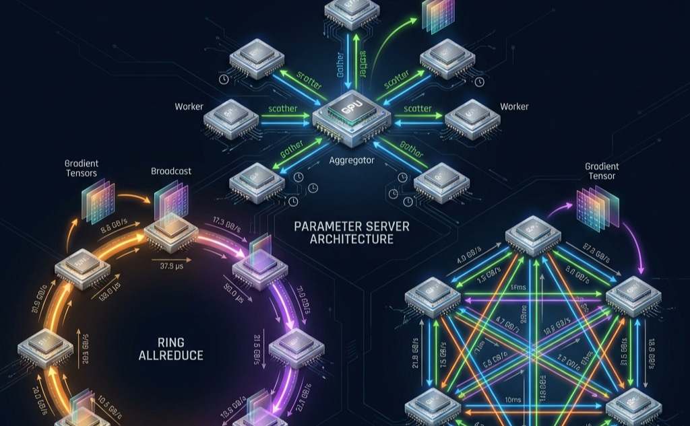

Collective Communication

Purpose
Why does communication between machines become the fundamental constraint that governs large-scale machine learning systems?
Computation scales by adding processors; communication scales by moving data between them. These scale differently: adding a processor increases aggregate compute linearly, but coordinating that processor with all others increases communication quadratically or worse depending on the synchronization pattern. At sufficient scale, the time spent exchanging gradients, activations, and parameters exceeds the time spent computing them. This crossover point is not a bug to be fixed but a fundamental property of distributed systems that determines which parallelization strategies work, which model sizes are trainable, and which organizations can operate at frontier scale. The physics of light-speed delays, bandwidth limits, and energy costs of data movement constrain communication as firmly as transistor physics constrains computation, yet communication is far less intuitive to reason about, making it the hidden bottleneck that undermines systems designed by those who understand only the compute side.
Learning Objectives
- Apply the \(\alpha\)-\(\beta\) model to quantify when communication becomes the dominant bottleneck by deriving the bandwidth and latency bounds for distributed training at different cluster scales.
- Compare AllReduce algorithms (ring, tree, hierarchical) by analyzing their time complexity and identifying the crossover points where each becomes optimal based on message size and cluster scale.
- Select appropriate collective primitives (AllReduce, AlltoAll, AllGather, ReduceScatter) for different model architectures by matching communication patterns to workload requirements.
- Evaluate gradient compression techniques by analyzing bandwidth reduction vs. convergence impact trade-offs for quantization, sparsification, and error feedback mechanisms.
- Design topology-aware communication strategies by mapping collective operations to network architectures (fat-tree, rail-optimized, torus) to maximize bisection bandwidth utilization.
- Implement communication-computation overlap using pipelining and asynchronous operations to hide network latency behind gradient computation.
From Parallelism to Communication Patterns
When 10,000 GPUs need to agree on a single weight update, they do not simply broadcast data randomly into the void; they execute rigidly choreographed mathematical exchanges. In the Fleet Stack (Introduction), Communication algorithms sit squarely in the Distribution Layer.
The parallelism strategies introduced in Distributed Training Systems (data parallelism, model parallelism, and pipeline parallelism) all share a common assumption: workers can exchange data efficiently. That assumption hides what becomes the dominant engineering challenge at scale.
The gap between that assumption and reality reveals a fundamental asymmetry in how computation and communication scale. Computation is inherently local: each GPU operates on its own data independently, so adding GPUs increases aggregate compute capacity proportionally. Communication, however, is inherently global: ensuring all GPUs converge on the same synchronized state requires information to traverse physical distances between them. Adding more independent workers scales local work linearly, but coordinating those workers requires moving data across physical space. The most critical instance of this coordination is gradient synchronization.
Definition 1.1: Gradient Synchronization
Gradient Synchronization is the collective communication protocol executed at each training step in which every worker transmits its locally computed gradient tensor to all other workers, receives their gradients, and computes an aggregate update that all workers apply identically to their model copies.
- Significance (Quantitative): A 70B-parameter model in BF16 generates 140 GB of gradient data per worker per step. Synchronizing across 1,000 GPUs via ring AllReduce at 50 GB/s per link requires approximately 140 GB/50 GB/s \(\approx 2.8\) seconds of communication per step—dominating the \(L_{\text{lat}}\) term in the iron law and consuming 40–70 percent of total training time before overlap techniques are applied.
- Distinction (Durable): Unlike parameter-server approaches (where all workers send gradients to a centralized aggregator whose bandwidth scales as \(O(N)\)), ring AllReduce distributes the communication across all workers so that each worker’s per-step communication cost stays constant at \(2 \times (N-1)/N \times \text{gradient\_size}\) regardless of cluster size.
- Common Pitfall: A frequent misconception is that gradient synchronization overhead scales with the number of GPUs. In ring AllReduce, per-node communication volume is constant as the cluster grows—the bottleneck is the gradient volume per step (proportional to model size), not the number of participants.
The requirement for gradient synchronization is not a design choice; it is a mathematical necessity for convergence. If different GPUs apply different gradient updates to their local copies of the model, the copies diverge. After enough steps, the models on different GPUs represent entirely different functions, and the training process no longer approximates stochastic gradient descent on the global loss. Synchronization ensures that all copies remain identical (within floating-point precision) at every step, preserving the theoretical convergence guarantees of the optimization algorithm via the AllReduce1 primitive.2
1 AllReduce: A compound term from MPI (Message Passing Interface) indicating a Reduce operation (summing data from all nodes to one) followed by a Broadcast (sending the sum to all nodes). Ring-based AllReduce optimizes this by performing both phases simultaneously in \(2(N-1)\) steps, ensuring that every GPU ends with the global sum without any single node becoming a bottleneck.
2 Parameter Server (PS): Google’s DistBelief (2012) used a star topology where all workers sent gradients to a central server whose bandwidth had to match the aggregate bandwidth of all workers. As clusters scaled from 10 to 1,000 nodes, the central server’s NIC saturated, making per-step communication cost grow as \(O(N)\) and forcing the transition to peer-to-peer collectives where per-node cost is constant.
3 Ring AllReduce: The algorithm dates to the 1990s HPC community (Patarasuk and Yuan formalized it in 2009), but Baidu’s Andrew Gibiansky popularized it for ML in February 2017, demonstrating 31\(\times\) speedup scaling to 40 GPUs. Uber’s Horovod library (2017) and NVIDIA’s NCCL subsequently made it the default for distributed training, because its \(O(1)\)-per-node bandwidth cost broke the \(O(N)\) bottleneck of parameter servers.
The volume of data that must be synchronized is proportional to the model size. A model with \(P\) parameters stored in BF16 (2 bytes per parameter) generates \(2P\) bytes of gradient data per training step per GPU. For a 70 billion parameter model, this is 140 GB of gradients that every GPU must send and receive.3
At frontier scale (hundreds of billions of parameters across thousands of GPUs), gradient synchronization dominates the training step time, consuming 30–70 percent of wall-clock time unless aggressive optimization techniques are applied. The remainder of this chapter develops those techniques systematically.
The physics of data movement
Before designing algorithms, we must understand the physical constraints governing data movement. Unlike software, which can be optimized almost indefinitely, communication is bound by the speed of light and the Shannon limit of channel capacity.
The speed of light sets the latency floor for all communication. In a vacuum, light travels at \(c \approx 300,000\) km/s. In optical fiber, the refractive index (\(n \approx 1.5\))4 slows this to \(\approx 200,000\) km/s, or 5 microseconds per kilometer. A datacenter spanning 500 meters introduces a minimum 2.5 \(\mu s\) one-way propagation delay (5.0 \(\mu s\) round-trip). While negligible for human perception, this is thousands of clock cycles for a GPU operating at 1.5 GHz.
4 The Speed of Light Constraint: Light travels through optical fiber at approximately 200,000 km/s, or 200 meters per microsecond. In a massive datacenter where cables between racks span 100 meters, the “wire delay” alone contributes 500 ns to every message—a physical limit that no amount of better networking hardware can reduce.
Higher bandwidth demands more signaling energy per bit, creating a bandwidth-distance product constraint. Modern InfiniBand NDR operates at 100 Gbps per lane using PAM4 signaling (4 voltage levels per symbol), which requires more precise analog circuits than the simpler NRZ (2 levels) used by earlier generations. This precision comes at a cost: the maximum reach of a copper cable at NDR rates is approximately 2 meters before the signal degrades below recoverable levels. Longer distances require active optical cables (AOCs) or fiber transceivers that convert electrical signals to light and back, adding both cost (hundreds of dollars per link) and latency (nanoseconds per conversion). The bandwidth-distance product is a fundamental constraint: a link can have high bandwidth or long distance, but not both cheaply.
Moving data also costs energy that scales with distance, as Figure 1 illustrates. Accessing data from local SRAM costs roughly 0.5 pJ/bit. Moving it across a PCB (NVLink) costs 5–10 pJ/bit. Moving it across a datacenter via InfiniBand optical links costs 20–50 pJ/bit.
{kind=link}
At the exascale (tens of thousands of GPUs), the power budget for communication rivals the power budget for computation itself. A 10,000-GPU cluster exchanging 1 GB of gradients per step at 30 pJ/bit consumes approximately 4.8 kJ per AllReduce (accounting for the factor of 2 in data movement), a non-trivial fraction of the total per-step energy budget.
Beyond these physical limits, protocol overhead adds a per-message software tax. Traditional TCP/IP stacks incur microseconds of OS kernel overhead per packet: the CPU must process socket calls, traverse the kernel networking stack, copy data between user and kernel buffers, and interact with the NIC through device drivers. High-performance ML networks bypass the kernel entirely using RDMA (Remote Direct Memory Access)5, allowing the network card (NIC) to read directly from GPU memory via the PCIe bus. RDMA eliminates the kernel traversal, reducing per-message overhead from 10–20 \(\mu\)s (TCP) to 1–3 \(\mu\)s (RDMA). The most advanced configuration, GPUDirect RDMA, further eliminates the CPU from the data path: the NIC reads from GPU HBM through a direct PCIe peer-to-peer transfer, without the data ever touching CPU DRAM.
5 Zero-Copy Communication: RDMA (Remote Direct Memory Access) allows the NIC to transfer data directly from the application’s memory on one node to the application’s memory on another, bypassing the operating system’s kernel buffers. For a 350 GB gradient exchange, zero-copy avoids moving 700 GB of data between the CPU and main memory, reclaiming significant memory bandwidth (\(\text{BW}\)).
These three constraints interact multiplicatively. Latency sets the floor for every message regardless of size. Bandwidth caps the throughput for large transfers. Protocol overhead adds a per-message tax that penalizes fine-grained communication. The following napkin math exercise quantifies how these constraints combine for a realistic training scenario.
Napkin Math 1.1: AllReduce Cost for a 70B Model
Step 1: Size the gradient payload. Each GPU produces a full gradient tensor: \(70 \times 10^9 \times 4\ \text{bytes} =\) 280 GB.
Step 2: Apply the Ring AllReduce bandwidth formula. \[T_{\text{bandwidth}} = 2 \cdot \frac{N-1}{N} \cdot \frac{M}{\beta}\]
Substituting: \(T_{\text{bandwidth}}\) = 1.97\(\times\) 280 GB/50 GB/s \(\approx\) 11,025 ms.
Step 3: Add the latency term. \[T_{\text{latency}} = 2(N-1) \cdot \alpha\]
Substituting: \(T_{\text{latency}}\) = 2\(\times\) \(63 \times 3\) \(\mu\)s = 0.4 ms.
Step 4: Total communication time. Total: \(T_{\text{AllReduce}} \approx\) 11,025 + 0.4 \(\approx\) 11,025 ms.
The Systems Insight: The gradient AllReduce alone takes over 11 seconds. This is pure communication overhead added to every training step. At this scale, communication dominates the step time unless overlapped with backward pass computation. This is why production systems pipeline AllReduce with the backward pass, launching communication for early layers while later layers are still computing.
The exercise above reveals why data movement, not computation, becomes the governing constraint at scale. A single AllReduce on a 70B model’s gradients consumes seconds of wall-clock time, during which all GPUs would otherwise sit idle. This asymmetry between local computation (which parallelizes perfectly) and global coordination (which requires physical data movement) motivates every algorithm in the remainder of this chapter. Reducing those 11 seconds by even 50 percent would save thousands of GPU-hours over a typical training campaign, translating directly to reduced cost and faster time to deployment.
The cost analysis also explains why the choice of collective algorithm matters far more than most practitioners realize. Using a suboptimal algorithm that achieves only 60 percent of theoretical bandwidth (a common outcome with poor topology mapping) would inflate the 11-second AllReduce to nearly 19 seconds, adding 8 seconds of pure waste to every training step.
Communication algorithms operate at the Distribution Layer of the Fleet Stack. The Infrastructure Layer below provides the raw bandwidth through NVLink, InfiniBand, and network topologies (covered in Network Fabrics). The Serving Layer above depends on efficient gradient synchronization to complete training runs that produce deployable models. When communication algorithms fail to saturate the available bandwidth, the bottleneck propagates upward: training takes longer, serving models are delivered later, and the entire fleet operates below its economic potential. The algorithms in this chapter are the bridge between physical infrastructure and distributed ML workloads.
Figure 2 quantifies how this communication overhead compounds as the fleet grows. At 8 GPUs within a single NVLink-connected node, communication consumes roughly 25 percent of each training step because the 900 GB/s interconnect bandwidth keeps pace with gradient volume. As the cluster expands to 64 GPUs across 8 nodes, the transition to InfiniBand (50 GB/s per port) shifts the balance: communication now dominates at approximately 50 percent of step time, with an additional 5 percent lost to synchronization barriers. At frontier scale (4,096 GPUs), communication and synchronization overhead together consume 80 percent of the training step, leaving only 20 percent for useful computation. This progression explains why every algorithm in this chapter exists: without hierarchical collectives, gradient compression, and communication-computation overlap, large-scale training would spend the vast majority of its multi-million-dollar compute budget waiting for data to arrive.
{kind=link}
The gradient’s travel manifest
The journey begins at the moment the backward pass completes. On a single machine, that was the end of the story: the weights were updated, and the neuron learned. At production scale, however, the gradient is born into isolation. It exists on one GPU, while the “truth” of the model is distributed across thousands. To achieve global convergence, the gradient must find its peers.
The specific “travel manifest” for this journey is dictated by the parallelism strategy chosen in Distributed Training Systems. The choice of how the math is split determines how the data moves. For our Lighthouse Archetypes (Three systems archetypes), these manifests differ fundamentally:
- Archetype A (GPT-4/Llama-3): Our gradient is part of a massive, dense tensor. It needs to meet every other gradient in the fleet to compute a global average. Its primary vehicle is the AllReduce.
- Archetype B (DLRM at Scale)—the Deep Learning Recommendation Model (DLRM) workload6: Our gradient (or activation) is sparse and targeted. It does not need to meet everyone; it needs to find one specific “Expert” GPU across the datacenter. Its vehicle is the AlltoAll.
6 DLRM (Deep Learning Recommendation Model): Meta’s 2019 architecture for click-through rate prediction, where embedding tables can exceed 100 GB and must be sharded across workers. Each forward pass triggers AllToAll to exchange sparse embedding lookups, creating a communication pattern where message sizes are small (hundreds of KB) but fan-out is \(O(N)\), making DLRM one of the most latency-sensitive distributed workloads in production.
Understanding this mapping is essential: the what of parallelism directly determines the how of communication. At frontier scale, these strategies are not mutually exclusive. A single training run for a large language model typically employs 3D parallelism (combining data, tensor, and pipeline parallelism simultaneously), which means multiple collective primitives execute concurrently on overlapping subsets of GPUs. Tensor parallelism drives AllReduce operations within each node (over NVLink), pipeline parallelism drives point-to-point sends between pipeline stages (often between nodes), and data parallelism drives AllReduce operations across groups of nodes (over InfiniBand). Each primitive operates on a different process group, a subset of the total GPU population that participates in that particular collective. The communication library must manage these overlapping process groups without creating contention between them, a challenge that requires careful allocation of network channels and bandwidth across the concurrent collectives.
Table 1 summarizes the mapping from parallelism strategy to collective primitive.
| Parallelism Strategy | The Gradient’s Goal | Primary Primitive | Primary Constraint |
|---|---|---|---|
| Data Parallelism | Meet everyone, compute global average | AllReduce | Bandwidth (Large payloads) |
| FSDP/ZeRO | Find shards, reconstruct the whole | AllGather + ReduceScatter | Bandwidth (High frequency) |
| Tensor Parallelism | Quick handshake within the node | AllReduce | Latency (Speed is life) |
| Pipeline Parallelism | Handoff to the next neighbor | Point-to-Point (Send/Recv) | Latency (Sequential dependencies) |
| Expert Parallelism (MoE) | Targeted routing to a specialist | AlltoAll | Latency + Contention |
Expert Parallelism refers to the mixture-of-experts (MoE)7 architecture pattern.
7 Mixture of Experts (MoE): An architecture where each token activates only a subset of specialized subnetworks (experts), reducing per-token FLOPs while maintaining total model capacity. The systems trade-off is stark: MoE replaces the bandwidth-bound AllReduce of dense models with latency-bound AllToAll, shifting the communication bottleneck from \(\beta\) to \(\alpha\) and creating \(O(N^2)\) contention that limits practical cluster size.
Table 1 shows that different parallelism strategies impose fundamentally different communication patterns. Data parallelism and FSDP generate large, bandwidth-bound messages that benefit from ring-based algorithms and hierarchical decomposition. Tensor and pipeline parallelism generate small, latency-bound messages that benefit from tree-based algorithms and low-overhead software stacks. Expert parallelism generates all-to-all traffic patterns that stress the network’s bisection bandwidth. To reason quantitatively about these differences, we need a model of network performance.
Self-Check: Question
A team triples the GPU count on a dense training run expecting near-linear wall-clock speedup, but step time drops only 30 percent. Per-GPU compute utilization falls from 65 percent to 34 percent. What does the section’s local-versus-global asymmetry predict as the root cause?
- Each added GPU roughly triples local arithmetic throughput, while gradient synchronization must traverse physical space and scale with participant count, so coordination cost grows while per-GPU compute share shrinks.
- Backpropagation stops working correctly when distributed across multiple nodes because gradients cannot be computed in parallel.
- Floating-point accumulation becomes numerically unstable as more GPUs participate in the reduction.
- Optimizer state must be shuffled through host DRAM whenever the cluster exceeds one node.
A team scales a 70B-parameter model’s gradient synchronization from 8 GPUs to 1,000 GPUs under ring AllReduce and expects per-node bytes transferred to grow roughly linearly with participant count. Explain why that expectation is wrong, and identify what actually dominates synchronization time at scale.
A mixture-of-experts layer routes each token to a specific remote expert GPU based on a gating function, then gathers the expert outputs back for the next layer. Which collective primitive does this routing pattern most naturally induce, and why?
- Broadcast, because every GPU needs the same gating weights.
- AllToAll, because each worker must send distinct payloads to specific remote destinations rather than compute one global aggregate.
- AllReduce, because the per-expert outputs must be summed across all workers.
- ReduceScatter, because tokens are divided evenly across experts.
True or False: Deploying RDMA on a cluster eliminates the distance-dependent latency and bandwidth-over-distance costs that physically constrain collective communication.
Order the following stages of one data-parallel training step: (1) synchronize gradients across all workers, (2) perform the optimizer step on each replica using synchronized gradients, (3) run the forward pass and compute loss on each local batch, (4) run the backward pass to compute local gradients.
Mapping the Terrain: Network Performance Modeling
A datacenter engineer cannot predict how long it takes to send ten megabytes across a cluster without knowing two distinct variables: the fixed startup tax and the per-byte transit fee. As the gradient begins its journey, it immediately encounters the physical reality of the datacenter network.
The - reality: When physics fights back
Every step our gradient takes is governed by the linear cost model \(T(n) = \alpha + n/\beta\). This is not merely a formula; it is the “Physics of Failure” for distributed systems.
Definition 1.2: α-β Model (Hockney Model)
α-β Model (Hockney Model) is the linear communication cost model \(T(n) = \alpha + n/\beta\) that decomposes message transfer time into a fixed startup latency (\(\alpha\), the per-message overhead) and a message-size-dependent bandwidth term (\(n/\beta\), proportional to bytes transferred), enabling algorithm designers to predict when message fusion or gradient compression will improve throughput.
- Significance (Quantitative): For InfiniBand NDR at \(\alpha \approx 2\,\mu\text{s}\) and \(\beta \approx 50\,\text{GB/s}\), the crossover size \(n^* = \alpha \cdot \beta \approx 100\,\text{KB}\). MoE routing tokens (~4 KB each) are 25\(\times\) below \(n^*\): fusing 100 tokens into one 400 KB message reduces communication cost from \(100\alpha = 200\,\mu\text{s}\) to one \(\alpha + n/\beta \approx 10\,\mu\text{s}\), a 20\(\times\) improvement. By contrast, Top-K gradient compression that reduces a 140 GB gradient to 1.4 GB (1 percent sparsity) saves bandwidth but does not change the startup cost, so it is most valuable when \(n \gg n^*\).
- Distinction (Durable): Unlike idealized throughput models that treat bandwidth as the sole communication cost, the α-β model reveals that \(N\) small messages of size \(n/N\) cost up to \(N\times\) more than one large message of size \(n\) when \(n/N \ll n^*\)—explaining why NCCL fuses small AllReduce calls and why MoE routing algorithms buffer tokens before launching collectives.
- Common Pitfall: A frequent misconception is that gradient compression always helps. If the compressed gradient size remains well above \(n^*\), compression reduces the bandwidth term but leaves the latency term unchanged—gradient sparsification at 99 percent compression on a 70B model still transfers 1.4 GB per AllReduce, remaining firmly bandwidth-bound and not recovering latency-regime performance.
The two parameters have distinct physical meanings:
- Latency (\(\alpha\)): The fixed start-up cost to send a message, regardless of size. This includes software overhead (kernel launch, NCCL initialization), PCIe traversal, and network switching time.
- Bandwidth (\(\beta\)): The sustained data transfer rate (bytes per second).
The critical message size \(n = \alpha \cdot \beta\) marks the crossover point: messages smaller than \(n\) are latency-bound; messages larger are bandwidth-bound.
Table 2 shows typical values for modern interconnects:
| Interconnect | Latency (α) | Bandwidth (β) | Critical Size (n*) |
|---|---|---|---|
| NVLink 4.0 (intra-node) | 1–2 μs | 900 GB/s | ~1 MB |
| InfiniBand NDR 400G | 1–3 μs | 50 GB/s (per port) | ~100 KB |
| InfiniBand HDR 200G | 2–5 μs | 25 GB/s | ~75 KB |
| PCIe Gen5 (GPU↔︎CPU) | 2–5 μs | 64 GB/s | ~200 KB |
| Ethernet 100G (RoCE) | 5–10 μs | 12 GB/s | ~100 KB |
Applying the critical message size formula to a concrete workload reveals which optimization strategy matters most:
Napkin Math 1.2: The Critical Message Size
The Math:
\(n = \alpha \cdot \beta = 2 \times 10^{-6}\) s \(\times 50 \times 10^9\) B/s \(=\) 100 KB
The Systems Insight: Messages under 100 KB (like MoE tokens, pipeline activations) are latency-bound: buy lower-latency switches and reduce software overhead. Messages over 100 KB, such as large language model (LLM) gradients, are bandwidth-bound: buy more bandwidth and compress the data. Applying the wrong optimization wastes money without improving performance.
The critical message size separates two distinct operating regimes:
- Latency-Bound (\(n < n\)): For small messages (for example, MoE routing tokens, scalar reductions), time is dominated by \(\alpha\). Optimization focuses on fusion (batching small messages), topology (reducing hop count), and software stack tuning (kernel bypass via RDMA).
- Bandwidth-Bound (\(n \gg n\)): For large messages (for example, LLM gradients, optimizer states), time is dominated by \(n/\beta\). Optimization focuses on compression (FP8, Top-K sparsity), algorithm choice (Ring vs. Tree), and link aggregation (multi-rail NICs).
A direct comparison of two message sizes illustrates how the bottleneck shifts between these regimes:
Napkin Math 1.3: Latency vs. Bandwidth Dominance
Case A: 1 MB Message
- Bandwidth Time: \(10^6 / (50 \times 10^{9})\) = 20 \(\mu\text{s}\).
- Latency Time: \(2\ \mu s\).
- Total: 22 μs. Latency is 9 percent of total, still meaningful.
Case B: 1 GB Message
- Bandwidth Time: \(10^9 / (50 \times 10^{9})\) = 20,000 \(\mu\text{s}\) = 20 ms.
- Latency Time: \(2\ \mu s\).
- Total: 20,002 μs. Latency is 0.01 percent, completely negligible.
The Systems Conclusion: For Data Parallelism (large gradients), the target is \(\beta\): compress gradients and add NICs. For Pipeline/Expert Parallelism (small activations), every microsecond of \(\alpha\) matters: kernel bypass and topology optimization. The \(\alpha\)-\(\beta\) model identifies which constraint to optimize.
Checkpoint 1.1: Alpha-Beta Diagnostics
Verify your understanding of network performance regimes:
The LogP model
The α-β model assumes the processor is idle during communication. For pipelined systems where we overlap communication with computation, this assumption fails. The LogP model (Culler et al. 1993) extends α-β with two additional parameters:
- L (Latency): The time for a message to traverse the network (similar to α).
- o (Overhead): The CPU/GPU time spent initiating or receiving a transfer. During this time, the processor cannot compute, making this the non-overlappable cost.
- g (Gap): The minimum time interval between consecutive message injections (inverse of message rate). This models link contention.
- P (Processors): The number of processors in the system.
LogP distinguishes network latency (L, which can be hidden) from processor overhead (o, which cannot). A system can overlap communication with computation only if the compute kernel runs longer than the overhead. A worked example demonstrates this distinction:
Napkin Math 1.4: Hiding Communication Behind Computation
The Math:
- Overlappable portion: Network latency \(L\) = 100 \(\mu\text{s}\) (data in flight while GPU computes).
- Non-overlappable portion: \(2o\) = 100 \(\mu\text{s}\) (GPU busy initiating/receiving).
- Compute available: 500 \(\mu\text{s}\).
- Hidden: All 100 μs of \(L\) can overlap with compute.
- Exposed: The 100 μs of \(o\) cannot overlap.
Effective time: max(500, 100 + 100) = 500 \(\mu\)s (communication hidden!). Figure 3 shows this overlap visually.
The Systems Insight: The α-β model captures the total communication time. The LogP model reveals how much of it can be hidden. When designing pipelined training, optimize for low \(o\) (kernel bypass, GPUDirect) rather than high \(\beta\) alone.
{kind=link}
The choice between models depends on the analysis context:
- \(\alpha\)-\(\beta\) Model: Use for back-of-envelope calculations, algorithm selection (Ring vs. Tree), and when communication is blocking (synchronous barriers). The model’s strength is its simplicity: two parameters (\(\alpha\), \(\beta\)) that can be measured directly with a point-to-point bandwidth test and a zero-byte message latency test. Its weakness is that it assumes the processor is idle during communication, making it overly pessimistic when overlap is possible.
- LogP Model: Use when analyzing pipelined execution, compute-communication overlap, or when debugging why a theoretically-fast algorithm underperforms (often high \(o\)). The LogP model’s distinction between network latency \(L\) (which can be hidden) and processor overhead \(o\) (which cannot) is essential for determining whether a given overlap strategy will hide communication. Its weakness is that measuring \(o\) accurately requires profiling tools like NVIDIA Nsight Systems, since \(o\) depends on the specific communication library and GPU driver stack.
In practice, most engineering calculations start with the \(\alpha\)-\(\beta\) model for initial sizing and algorithm selection, then refine with LogP analysis when communication-computation overlap is the target optimization. Both models share a common limitation: they assume a single flow on a single link. Real communication patterns involve multiple simultaneous flows competing for shared bandwidth, which can cause congestion that neither model captures. For congestion-sensitive workloads (particularly AllToAll for MoE), empirical benchmarking on the target cluster remains the gold standard.
Putting the model to work: Llama 70B communication budget
The alpha-beta model becomes most valuable when applied to real training configurations. Consider a concrete scenario: training a Llama-class 70B parameter model using data parallelism across 128 GPUs spanning 16 nodes of 8 GPUs each. The gradient tensor is 280 GB in FP32 (70 billion parameters at 4 bytes each). During each training step, this entire gradient must be synchronized across all workers.
Using BF16 gradients (a standard practice that halves communication volume to 140 GB), the hierarchical AllReduce decomposes as follows:
- Intra-Node ReduceScatter (NVLink at 900 GB/s): Each GPU exchanges 7/8 of the gradient locally. Time: 136.1 ms.
- Inter-Node Ring AllReduce (InfiniBand NDR at 50 GB/s): Each GPU synchronizes only 17.5 GB across 16 nodes. Bandwidth time: 656 ms. Latency time: 0.09 ms.
- Intra-Node AllGather (NVLink): Distributes the final result locally. Time: 136.1 ms.
The total hierarchical AllReduce takes approximately 929 ms, compared to 5,557 ms for a flat Ring AllReduce that ignores the bandwidth hierarchy. This difference is not marginal; it determines whether communication can be hidden behind computation or whether it becomes the critical path.
Theory vs. practice: The NCCL reality gap
The Bandwidth-Latency Trade-off (Principle \(\ref{nte-alpha-beta-model}\)) provides useful first-order predictions, but real communication libraries introduce overheads that the idealized \(\alpha\)-\(\beta\) model does not capture. NCCL, the dominant GPU communication library, adds protocol negotiation, memory registration, and internal pipelining that modify the effective alpha and beta values. Table 3 compares alpha-beta predictions against measured NCCL performance for common message sizes on an 8-node DGX H100 cluster (64 GPUs, InfiniBand NDR 400G).
| Message Size | \(\alpha\)-\(\beta\) Prediction | Measured NCCL | Ratio (Measured/Predicted) | Explanation |
|---|---|---|---|---|
| 1 KB | ~3.1 μs | ~25 μs | ~8.0\(\times\) | NCCL protocol setup dominates |
| 64 KB | ~4.3 μs | ~30 μs | ~7.0\(\times\) | Still latency-bound; NCCL overhead |
| 1 MB | ~23 μs | ~40 μs | ~1.7\(\times\) | Transitioning to bandwidth-bound |
| 64 MB | ~1.3 ms | ~1.6 ms | ~1.2\(\times\) | NCCL approaches theoretical bandwidth |
| 1 GB | ~20 ms | ~23 ms | ~1.15\(\times\) | Bandwidth-dominant; NCCL nearly optimal |
| 10 GB | ~200 ms | ~215 ms | ~1.08\(\times\) | Large payloads saturate the wire |
The table reveals two critical lessons. First, the alpha-beta model underestimates small-message latency by 7–8\(\times\) because it accounts only for wire-level propagation, not the software stack overhead. For latency-sensitive operations (tensor parallelism AllReduce, MoE token routing), the effective alpha is 5–10\(\times\) higher than the physical wire latency. Second, for large messages the model is accurate to within 8–15 percent, confirming that bandwidth is the binding constraint and that NCCL’s internal optimizations (channel pipelining, kernel fusion) successfully saturate the available links.
This reality gap has practical consequences for algorithm selection. The crossover point between Ring and Tree AllReduce shifts upward in practice because the effective alpha is larger than the wire-level value. Engineers who use textbook alpha values will underestimate latency costs and may choose Ring when Tree would perform better. A robust practice is to measure the effective alpha on the specific cluster by benchmarking small-message AllReduce latency, then use that measured value in all subsequent calculations.
Self-Check: Question
On InfiniBand NDR with alpha = 2 microseconds and beta = 50 GB/s, an MoE routing workload sends 4 KB token messages and a dense data-parallel workload sends 1 GB gradient buffers. Which optimization family should each workload prioritize?
- Both workloads should prioritize reducing alpha, since alpha dominates on modern fabrics regardless of message size.
- The 4 KB messages sit well below the ~100 KB critical size so MoE should fuse messages and reduce startup cost, while 1 GB buffers sit three orders above the critical size so dense training should compress payload and add bandwidth.
- Both workloads should prioritize switching from RDMA to TCP to simplify the stack.
- The 1 GB buffers are latency-bound because longer messages take longer, so dense training should optimize alpha.
A training engineer has tuned an AllReduce algorithm using the alpha-beta model and predicted that it should finish in 5 ms on her cluster, but profiling shows the backward pass running in parallel is never fully hidden behind the AllReduce. Explain why the LogP model is better suited than alpha-beta for diagnosing this overlap failure.
The chapter’s Llama 70B budget on 128 GPUs across 16 nodes shows hierarchical AllReduce completing roughly an order of magnitude faster than flat ring AllReduce. Which mechanism most directly explains the speedup?
- Hierarchical AllReduce eliminates inter-node communication entirely by keeping all traffic on NVLink.
- Hierarchical AllReduce first reduces within each node over fast NVLink so only a reduced shard, not the full gradient, traverses the slower InfiniBand fabric between nodes.
- Hierarchical AllReduce switches the optimizer to require fewer synchronization steps per training iteration.
- Flat ring AllReduce cannot operate on BF16 gradients and must promote every value to FP32.
On a link with alpha = 2 microseconds and beta = 50 GB/s, a 4 KB MoE routing message takes roughly 2.08 microseconds of which 96 percent is startup cost; because this message sits 25 times below the ____ message size, fusing many tokens into one large transfer delivers a far larger speedup than adding raw bandwidth.
True or False: Alpha-beta model predictions are accurate for 1 GB AllReduce messages on a real cluster but can be off by 5 to 10 times for 64 KB messages, because measured NCCL small-message latency is inflated by protocol setup and memory registration overhead that alpha-beta does not model.
Choosing the Vehicle: Collective Operation Primitives
If a GPU simply opens a socket and sends a massive gradient to another GPU, the entire cluster will rapidly collapse into an unmanageable web of deadlocks and congestion. With the terrain mapped, the gradient must now choose its vehicle: strictly choreographed group exchanges known as collective operations. Figure 4 provides a visual overview of the six core primitives that form this vocabulary.
Definition 1.3: Collective Operation
Collective Operation is a distributed communication pattern in which all processes in a group participate simultaneously to aggregate, broadcast, or redistribute data—with the correctness guarantee that every participant receives the same result regardless of message ordering or arrival time.
- Significance (Quantitative): The right collective algorithm determines whether communication scales with cluster size or remains constant. Ring AllReduce achieves bandwidth-optimal \(2(N-1)/N \times M / \beta\) per node (constant in \(N\)), while a naive reduce-then-broadcast approach costs \(O(N \times M / \beta)\), making it 500\(\times\) worse for \(N=1024\). Algorithm selection thus directly determines whether the \(\text{BW}\) term in the iron law is the training bottleneck.
- Distinction (Durable): Unlike point-to-point communication (where one sender and one receiver exchange data independently), a collective operation coordinates the entire process group—every participant must invoke the collective before any can complete it, and the library guarantees a consistent result even when different processes contribute different data.
- Common Pitfall: A frequent misconception is that one collective algorithm suits all message sizes. Ring AllReduce achieves near-optimal bandwidth for large gradient tensors but has \(O(N)\) latency—for small messages like MoE routing decisions (~4 KB), a recursive-halving (Rabenseifner) algorithm reduces latency to \(O(\log N)\) steps at the cost of suboptimal bandwidth utilization, requiring workload-specific algorithm selection rather than a single default.
{kind=link}
Different model architectures stress different operations, and selecting the wrong primitive for a workload creates unnecessary bottlenecks.
The six core primitives
- Broadcast: One sender transmits data to all receivers.
- Use Case: Distributing initial model weights from rank 0 to all workers at startup. Used across all parallelism strategies during initialization.
- Complexity: \(O(\log N)\) latency with tree algorithms; bandwidth cost \(O(M)\) as data traverses tree levels.
- Reduce: Data from all workers is aggregated (sum, min, max) to a single root worker.
- Use Case: Aggregating validation metrics (loss, accuracy) to a logging process. Common in monitoring and checkpointing across all training strategies.
- Complexity: \(O(\log N)\) latency with tree algorithms; bandwidth cost \(O(M)\) total.
- AllReduce: Data from all workers is aggregated, and the result is distributed to all workers.
- Use Case: Data Parallelism (Distributed Training Systems). Synchronizing gradients so every GPU computes the same weight update.
- Semantics: \(y_i = \sum_{j=0}^{N-1} x_j\) for all \(i\).
- Complexity: Ring achieves bandwidth-optimal \(2\frac{N-1}{N}\frac{M}{\beta}\) but \(O(N)\) latency; Tree achieves \(O(\log N)\) latency but suboptimal bandwidth.
- AllGather: Every worker sends its data to every other worker. The result is a concatenation of all inputs.
- Use Case: Sharded Data Parallelism (FSDP8/ZeRO). Collecting sharded parameters before a forward/backward pass.
- Semantics: Worker \(i\) starts with \(x_i\), ends with \([x_0, x_1, \dots, x_{N-1}]\).
- Complexity: Ring achieves \(\frac{N-1}{N}\frac{M}{\beta}\) bandwidth cost; total data grows to \(N \times M\) per worker.
- ReduceScatter: Data is reduced (summed), but the result is scattered such that each worker receives only a distinct chunk of the result.
- Use Case: Sharded Data Parallelism. Reducing gradients but keeping them sharded to save memory. Also used in Sequence Parallelism to distribute activations.
- Semantics: Worker \(i\) receives the \(i\)-th block of \(\sum x_j\).
- Complexity: Ring achieves \(\frac{N-1}{N}\frac{M}{\beta}\); functionally the inverse of AllGather.
8 FSDP (Fully Sharded Data Parallel): PyTorch’s implementation of ZeRO-3, which shards parameters, gradients, and optimizer states across \(N\) workers, reducing per-GPU memory from \(16P\) bytes under FP32 Adaptive Moment Estimation (Adam) to \(16P/N\) bytes. The trade-off is communication frequency: FSDP issues \(2L\) collective operations per step (AllGather + ReduceScatter per layer) instead of data parallelism’s single AllReduce, making it more sensitive to the \(\alpha\) overhead.
A key insight is that AllReduce can be decomposed into ReduceScatter followed by AllGather. This is not merely a mathematical equivalence; it is precisely how Ring AllReduce works internally (the Scatter-Reduce phase is a ReduceScatter, the AllGather phase is an AllGather). FSDP exploits this decomposition by separating the two phases in time: ReduceScatter runs immediately after the backward pass (reducing and sharding the gradients), while AllGather runs later, just before the next forward pass (reconstructing the full parameters). By inserting the optimizer step between ReduceScatter and AllGather, FSDP avoids ever materializing the full gradient tensor on any single GPU, reducing peak memory usage by \(N \times\).
- AllToAll: The most general pattern. Worker \(i\) sends a distinct chunk of data to worker \(j\). This is effectively a matrix transpose of distributed data.
- Use Case: Mixture of Experts (MoE) routing tokens to experts; DLRM9 exchanging embedding lookups across workers.
- Semantics: Worker \(i\) sends \(x_{i \to j}\) to worker \(j\) and receives \(x_{j \to i}\) from worker \(j\), for all \(j\).
- Complexity: \(O(N^2)\) logical connections create potential for network congestion; bandwidth cost is \(\frac{N-1}{N}M\) per worker, but contention makes this the hardest primitive to scale.
9 DLRM (Deep Learning Recommendation Model): Meta’s 2019 architecture for click-through rate prediction, where embedding tables can exceed 100 GB and must be sharded across workers. Each forward pass triggers AllToAll to exchange sparse embedding lookups, creating a communication pattern where message sizes are small (hundreds of KB) but fan-out is \(O(N)\), making DLRM one of the most latency-sensitive distributed workloads in production.
The contrast between AllToAll and AllReduce highlights a fundamental difference in how collective operations scale with cluster size.
Systems Perspective 1.1: AlltoAll vs. AllReduce: Why Scale Differs
In an AlltoAll, every process has a unique piece of data for every other process. This creates \(O(N^2)\) logical connections. At the hardware level, this leads to network contention: if 1024 GPUs all try to send data to different targets simultaneously, the “Fat-Tree” or “Spine” switches in the datacenter become the bottleneck.
This is why Expert Parallelism (MoE) and large-scale Recommendation Systems often hit a “communication wall” much earlier than standard data-parallel models. The algorithm choice (AllReduce vs. AlltoAll) determines the scaling ceiling.
To make the AllToAll pattern concrete, consider a Mixture of Experts model with 64 experts distributed across 8 GPUs (8 experts per GPU). During each forward pass, a gating network assigns each input token to one or more experts. The tokens assigned to experts on remote GPUs must be physically moved to those GPUs before computation can proceed, and the results must be moved back afterward.
Napkin Math 1.5: AllToAll for MoE Token Routing
The Math:
Each GPU holds 512 tokens that need to reach 64 different experts across 8 GPUs. With uniform routing, each GPU sends \(512/8\) = 64 tokens to each of the other 7 GPUs (keeping 64 tokens local).
- Data per GPU-to-GPU transfer: 64 tokens \(\times\) 4 KB/token = 256 KB
- Total data sent per GPU: 7 \(\times\) 256 KB = 1.79 MB
- Total data received per GPU: 1.79 MB (symmetric)
Latency Analysis (InfiniBand NDR, \(\alpha =\) 3 \(\mu\)s, \(\beta =\) 50 GB/s):
Each of the 7 transfers is a 256 KB message. From the alpha-beta model: \(T\) = 3 + 5 = 8 \(\mu\text{s}\) per transfer.
If serialized: 7 \(\times\) 8 \(\mu\text{s}\) = 56 \(\mu\text{s}\). If all 7 transfers run in parallel (full-duplex, non-blocking): \(\approx\) 8 \(\mu\text{s}\).
The Systems Insight: The per-message sizes in MoE are small (hundreds of KB), placing them firmly in the latency-bound regime. This is why MoE scaling is constrained by alpha (latency), not beta (bandwidth), and why MoE systems benefit from low-latency switches and RDMA rather than raw bandwidth upgrades. The AllToAll also runs twice per layer (once for token dispatch, once for result collection), doubling the latency tax.
In practice, MoE routing is rarely perfectly uniform. Popular experts receive more tokens than unpopular ones, creating load imbalance that translates to communication imbalance. If one expert receives 3\(\times\) more tokens than average, the GPU hosting that expert receives 3\(\times\) more incoming data, creating a hotspot that can stall the entire collective (since AllToAll is a barrier operation). Production MoE systems address this through auxiliary load-balancing losses that penalize the gating network for routing too many tokens to any single expert, and through capacity factors that cap the maximum number of tokens an expert can accept (dropping overflow tokens). These techniques trade a small amount of model quality for communication balance, which is the right trade-off at scale.
Table 4 maps these primitives to the parallelism strategies introduced in Distributed Training Systems and the Lighthouse architectures defined in the Introduction.
| Training Strategy | Primary Collective | Bottleneck Characteristic |
|---|---|---|
| Data Parallelism | AllReduce | Bandwidth-bound (large gradients) |
| FSDP/ZeRO-3 | AllGather, ReduceScatter | Bandwidth-bound, high frequency |
| Tensor Parallelism | AllReduce, AllGather | Latency-bound (requires NVLink) |
| Pipeline Parallelism | Point-to-Point (Send/Recv) | Latency-bound (microbatch handoffs) |
| Sequence Parallelism | AllGather, ReduceScatter | Bandwidth-bound (activation exchange) |
| MoE (Experts) | AlltoAll | Latency-bound (dynamic token routing) |
| DLRM (RecSys) | AlltoAll | Latency & Bandwidth (sparse lookups) |
FSDP communication patterns
The FSDP/ZeRO strategy deserves special attention because its communication pattern differs fundamentally from standard data parallelism. In standard data parallelism, each GPU holds a complete copy of the model, computes gradients locally, and synchronizes via a single AllReduce at the end of the backward pass. FSDP eliminates this redundancy by sharding the model parameters across GPUs, so each GPU holds only \(1/N\) of the model.
The memory optimization transforms the communication pattern. Before each layer’s forward pass, the GPU must reconstruct the full parameter tensor by calling AllGather to collect the shards from all other GPUs. After the backward pass, the gradients are reduced and redistributed via ReduceScatter, so each GPU holds gradients only for its own parameter shard. The sharded parameters can then be discarded (freed from memory) until the next forward pass needs them.
The consequence is a trade-off between memory and communication frequency. Standard data parallelism communicates once per training step (a single AllReduce of the full gradient). FSDP communicates twice per layer per step (AllGather in forward, ReduceScatter in backward), but each communication is smaller (only \(1/N\) of the layer’s parameters per GPU). For a model with \(L\) layers, FSDP issues \(2L\) collective operations per step instead of 1, but each operation transfers approximately the same total bytes as the single AllReduce would. The total communication volume is comparable, but the communication is spread across more, smaller operations.
The higher operation count makes FSDP more sensitive to latency (\(\alpha\)) than standard data parallelism. If each of the \(2L\) collectives pays the full NCCL startup overhead (25–50 \(\mu\)s per operation from Table 3), the aggregate overhead for a 100-layer model is 5–10 ms, which can represent a meaningful fraction of step time. FSDP implementations mitigate this through prefetching (launching the next layer’s AllGather while the current layer is computing) and communication stream pipelining (using dedicated CUDA streams for communication that overlap with compute streams).
Selecting the right collective algorithm at each invocation requires understanding these asymmetric patterns. The AllGather operations in FSDP are medium-sized (one layer’s parameters, typically 10–100 MB for transformer models) and latency-sensitive (because computation blocks until the full parameters are available). The ReduceScatter operations are of similar size but can overlap with the next layer’s backward computation. This asymmetry means the AllGather operations benefit more from low-latency algorithms (Tree or hybrid) while the ReduceScatter operations can use bandwidth-optimal algorithms (Ring) because their latency is hidden behind computation.
The collective primitives catalog above defines what must be communicated; the question now becomes how to execute these primitives efficiently on real networks. The most performance-critical primitive, AllReduce, admits multiple algorithmic implementations whose latency and bandwidth characteristics differ by orders of magnitude. The choice of algorithm can change AllReduce time by an order of magnitude, making this the single most consequential implementation decision in distributed training.
Self-Check: Question
In FSDP, each worker holds a parameter shard and must reconstruct the full parameter tensor immediately before that layer’s forward pass, then release it. Which collective primitive matches this reconstruction semantic?
- AllReduce, which aggregates values numerically across all workers into one summed tensor.
- AllGather, which concatenates shards from all participants so every worker ends with the full tensor.
- Broadcast, which sends a single worker’s copy to all other workers.
- ReduceScatter, which computes a reduction and then distributes non-overlapping chunks to each worker.
Viewing AllReduce as ReduceScatter followed by AllGather is operationally important for FSDP because it:
- proves that Tree AllReduce is always faster than Ring AllReduce for any cluster size.
- allows FSDP to perform the ReduceScatter after backward and defer the AllGather until the next forward pass needs the parameters, keeping tensors sharded for most of the step instead of materializing full tensors at all times.
- means AllReduce can be skipped whenever gradients are sparse.
- eliminates the need for any inter-node communication across training steps.
A team migrates a 7B-parameter training run from standard data parallelism to FSDP to fit a larger model on the same hardware and observes that memory pressure drops as expected but throughput worsens. Explain why FSDP can preserve total communication volume yet degrade throughput, and identify the system property that changed.
A mixture-of-experts layer uses AlltoAll to route tokens to remote experts. The workload scales poorly from 128 to 1,024 GPUs even though the gradient AllReduce on the same hardware continues to scale well. What fundamental property of AlltoAll explains this divergence?
- AlltoAll cannot use RDMA, so every transfer must pass through CPU memory and bottlenecks on host DRAM.
- AlltoAll creates roughly N^2 distinct source-to-destination transfers that stress bisection bandwidth and produce contention patterns that AllReduce’s structured reduction avoids.
- AlltoAll is only valid within one node, so multi-node MoE must emulate it with repeated Broadcast operations.
- AlltoAll always moves more total bytes per worker than the model’s hidden dimension, regardless of batch size.
True or False: Because FSDP’s per-operation message size is much smaller than standard data parallelism’s single fused AllReduce, FSDP is automatically less sensitive to per-collective startup latency.
Engineering the Flow: AllReduce Algorithms
Imagine 1,000 GPUs, each holding a 1 GB gradient, all needing the exact sum of those 1,000 gradients simultaneously. If they all send their data to a central server, that server’s network card will instantly saturate and stall the entire cluster. The AllReduce is the heartbeat of the fleet, and its algorithmic design dictates our scaling limits.
Naive approaches vs. the bandwidth bottleneck
Consider a naive implementation using a Parameter Server (Star topology). All \(N\) workers send their gradients to rank 0; rank 0 sums them and sends the result back.
- Bottleneck: Rank 0’s bandwidth. It must receive \(N \times M\) bytes and send \(N \times M\) bytes.
- Time: \(T \propto N \times M / \beta\).
- Result: Linear slowdown. With 1000 GPUs, rank 0 melts.
This naive approach was historically common in early distributed ML frameworks, where a dedicated parameter server process received all gradients, performed the aggregation, and broadcast the result. For small clusters (4–8 GPUs), the bottleneck at rank 0 was tolerable. At moderate scale (32–64 GPUs), practitioners mitigated the bottleneck by sharding parameters across multiple parameter servers, so that each server handled only a subset of the gradient tensor. This sharded parameter server approach reduces the per-server traffic from \(N \times M\) to \(N \times M/S\) (where \(S\) is the number of servers), but it still scales linearly with \(N\) on each shard and introduces additional complexity in parameter partitioning and consistency management.
The fundamental limitation is that any star-topology approach concentrates traffic at a central point. Regardless of how many servers participate, the aggregate traffic through the central tier scales as \(O(N \times M)\). To achieve true scalability, we need algorithms where the communication volume per node is constant, regardless of \(N\). This property, known as bandwidth optimality, is the design target for all modern collective algorithms.
The bandwidth-optimal lower bound
Before examining specific algorithms, it is useful to establish a theoretical lower bound. In any correct AllReduce, every GPU starts with \(M\) bytes of local data and ends with \(M\) bytes of globally reduced data. Each byte of the final result incorporates information from all \(N\) GPUs, which means every GPU must receive at least \(M \cdot (N-1)/N\) bytes of “new” information (the contributions from all other GPUs). Symmetrically, each GPU must send at least \(M \cdot (N-1)/N\) bytes (its own contribution to the other GPUs’ results).
The minimum total transfer per GPU is therefore \(2 \cdot M \cdot (N-1)/N\) bytes (send plus receive). Dividing by the link bandwidth \(\beta\) gives the bandwidth lower bound:
\[T_{\text{bandwidth}}^{min} = \frac{2(N-1)}{N} \cdot \frac{M}{\beta}\]
As \(N\) grows large, this approaches \(2M/\beta\), which is independent of \(N\). An algorithm that achieves this bound is called bandwidth-optimal. Ring AllReduce achieves this bound exactly. Tree AllReduce does not. This distinction has practical consequences: on a 64-GPU cluster synchronizing a 1 GB gradient, the bandwidth difference between an optimal and a merely logarithmic algorithm amounts to several milliseconds per step, which accumulates to hours over a multi-day training run.
Ring AllReduce
Ring AllReduce10 arranges nodes in a logical ring (\(0 \to 1 \to \dots \to N-1 \to 0\)). It achieves bandwidth optimality by pipelining: every node sends and receives simultaneously on every link.
10 Bandwidth-Optimal: Ring AllReduce achieves the information-theoretic lower bound of \(2(N-1)/N \cdot M/\beta\) bytes per node, meaning no correct AllReduce algorithm can move fewer bytes per node regardless of topology or strategy. This optimality holds because every GPU must receive \(M(N-1)/N\) bytes of “new” information from other GPUs and contribute the same amount, and Ring saturates every link in every step.
The algorithm splits the vector of size \(M\) into \(N\) chunks and proceeds in two phases.
- Scatter-Reduce Phase: In \(N-1\) steps, chunks flow around the ring, accumulating sums. At the end, each node holds the complete sum for one chunk (\(1/N\) of the total result).
- AllGather Phase: In \(N-1\) steps, the partial sums circulate the ring until every node has all chunks.
The data flow during Step 1 is illustrated in Figure 5.
{kind=link}
The key property visible in Figure 5 is that every link carries data simultaneously in every step, leaving no link idle. This uniform link utilization is what makes Ring AllReduce bandwidth-optimal: each node sends exactly \(2(N-1)/N \cdot M\) bytes total across both phases, matching the information-theoretic lower bound.
To make the ring algorithm concrete, consider a step-by-step trace with 4 GPUs reducing a vector of 4 elements by summation. Each GPU \(i\) starts with a local gradient vector \(g_i = [a_i, b_i, c_i, d_i]\). The vector is split into 4 chunks (one per GPU), and the algorithm proceeds through two phases.
Napkin Math 1.6: Ring AllReduce: Step-by-Step Trace (4 GPUs)
- GPU 0: \([1, 5, 3, 7]\)
- GPU 1: \([2, 6, 4, 8]\)
- GPU 2: \([3, 7, 5, 9]\)
- GPU 3: \([4, 8, 6, 10]\)
Expected result (element-wise sum): \([10, 26, 18, 34]\).
Each GPU “owns” one chunk: GPU 0 owns chunk A (element 0), GPU 1 owns chunk B (element 1), and so on.
Phase 1: Scatter-Reduce (3 steps)
Each GPU sends its “owned” chunk to its right neighbor, which adds the received value to its local copy.
| Step | GPU 0 sends | GPU 1 sends | GPU 2 sends | GPU 3 sends | After receive and add: |
|---|---|---|---|---|---|
| 1 | chunk A (\(1\)) \(\to\) GPU 1 | chunk B (\(6\)) \(\to\) GPU 2 | chunk C (\(5\)) \(\to\) GPU 3 | chunk D (\(10\)) \(\to\) GPU 0 | GPU 0: D=\(17\), GPU 1: A=\(3\), GPU 2: B=\(13\), GPU 3: C=\(11\) |
| 2 | chunk D (\(17\)) \(\to\) GPU 1 | chunk A (\(3\)) \(\to\) GPU 2 | chunk B (\(13\)) \(\to\) GPU 3 | chunk C (\(11\)) \(\to\) GPU 0 | GPU 0: C=\(14\), GPU 1: D=\(25\), GPU 2: A=\(6\), GPU 3: B=\(21\) |
| 3 | chunk C (\(14\)) \(\to\) GPU 1 | chunk D (\(25\)) \(\to\) GPU 2 | chunk A (\(6\)) \(\to\) GPU 3 | chunk B (\(21\)) \(\to\) GPU 0 | GPU 0: B=\(\mathbf{26}\), GPU 1: C=\(\mathbf{18}\), GPU 2: D=\(\mathbf{34}\), GPU 3: A=\(\mathbf{10}\) |
After Phase 1, each GPU holds the complete sum for exactly one chunk: GPU 0 has the global sum for element B (26), GPU 1 for C (18), GPU 2 for D (34), GPU 3 for A (10).
Phase 2: AllGather (3 steps)
Each GPU sends its fully reduced chunk around the ring so all GPUs receive all results.
| Step | Action | Result |
|---|---|---|
| 4 | Each sends its complete chunk to right neighbor | Each GPU now has 2 of 4 final chunks |
| 5 | Continue forwarding | Each GPU now has 3 of 4 final chunks |
| 6 | Final forwarding | All GPUs hold \([10, 26, 18, 34]\) |
Total data movement per GPU: In each of the \(2(N-1)\) = 6 steps, each GPU sends exactly \(M/N\) = 1 element. Total per GPU: 6 \(\times\) 1 = 6 elements sent, 6 received.
Checkpoint 1.2: Ring AllReduce Mechanics
Verify your understanding of bandwidth-optimal reduction:
The trace above illustrates the key property of Ring AllReduce: at every step, every link in the ring is active, with data flowing in the same direction. No GPU ever sits idle, and no link is underutilized. This uniform link utilization is what makes Ring bandwidth-optimal.
The performance follows directly from the algorithm structure. Each node sends and receives \(\frac{M}{N}\) bytes in each of the \(2(N-1)\) steps. \[ T_{\text{ring}} = \underbrace{2(N-1)\alpha}_{\text{Latency Term}} + \underbrace{2\frac{N-1}{N} \frac{M}{\beta}}_{\text{Bandwidth Term}} \]
- Bandwidth: As \(N \to \infty\), the term approaches \(2M/\beta\). This is theoretically optimal (each byte must be sent once and received once).
- Latency: The latency scales linearly with \(N\). For 10,000 nodes, 20,000 sequential hops creates massive latency. This is why Ring is bad for small messages.
Tree AllReduce
Ring AllReduce pays a high price in latency for its bandwidth optimality. When a cluster grows to thousands of GPUs and the message size is moderate (a few megabytes), the \(2(N-1)\alpha\) latency term dwarfs the bandwidth term, and the algorithm spends most of its time in sequential hops rather than in useful data transfer. To address this linear latency, Tree AllReduce uses a binary tree structure.
- Reduce Phase: Leaves send to parents, parents sum and send up. Reaches root in \(\log_2 N\) steps.
- Broadcast Phase: Root sends result down to leaves in another \(\log_2 N\) steps.
Tree AllReduce has worse bandwidth efficiency because of link underutilization. In Ring AllReduce, every node sends and receives simultaneously, so all \(N\) links are active at every step. In Tree AllReduce, only a fraction of links are active at any time:
- At level 0 (leaves): \(N/2\) nodes send to \(N/2\) parents. Half the nodes are idle receivers.
- At level 1: \(N/4\) nodes send to \(N/4\) parents. Three-quarters are idle.
- At the root: Only 2 nodes communicate. \((N-2)\) nodes sit idle.
The result: while Ring achieves near-100 percent link utilization, Tree achieves only \(\approx 50\%\) on average because at each level, half the participating nodes are receiving (not sending).
The resulting time complexity reflects this trade-off: \[ T_{\text{tree}} = \underbrace{2\log_2 N \cdot \alpha}_{\text{Latency}} + \underbrace{2 \log_2 N \frac{M}{\beta}}_{\text{Bandwidth}} \]
- Latency: Logarithmic (\(O(\log N)\)). For 1024 nodes, Ring needs 2046 steps while Tree needs only 20. This 100\(\times\) reduction in steps makes Tree the preferred algorithm for latency-sensitive collectives such as tensor parallelism’s per-layer AllReduce, where message sizes are small but frequency is high.
- Bandwidth: The \(\log_2 N\) factor in the bandwidth term (vs. Ring’s constant factor of 2) means Tree sends \(\log_2 N/2\) times more data per node. For 64 GPUs, this amounts to \(6/2 = 3\times\) more bandwidth consumed. This bandwidth penalty makes Tree a poor choice for data parallelism’s large gradient AllReduce, where bandwidth efficiency determines whether the network is fully utilized or partially idle.
This bandwidth penalty is catastrophic for large-scale data parallelism. For our 175B parameter model’s 350 GB gradient AllReduce across 1,000 GPUs, the bandwidth term’s \(\log_2(1000) \approx 10\) multiplier means Tree would move roughly 10 times more data through the network than Ring—3.5 terabytes per GPU per training step. This would saturate the network for an order of magnitude longer, completely erasing any latency advantage.
Tree AllReduce is, however, the correct choice when latency is the primary bottleneck, typically for smaller collectives with small message sizes. The canonical use case is the AllReduce required for tensor parallelism, which operates on activations or weight gradients within a single layer. For an 8-GPU group inside a node communicating a 50 MB tensor, the latency drops from Ring’s \(2(8-1)\alpha = 14\alpha\) to Tree’s \(2\log_2(8)\alpha = 6\alpha\). The bandwidth penalty is a mere factor of \(\log_2(8)=3\), a small price to pay for more than halving the latency.
Recursive halving-doubling (butterfly)
Ring and Tree represent two extremes of the latency-bandwidth trade-off: Ring is bandwidth-optimal but latency-poor, while Tree is latency-optimal but bandwidth-poor. A natural question arises: can an algorithm achieve the best of both? A third approach attempts to combine the logarithmic latency of Tree with better bandwidth utilization. The Recursive Halving-Doubling algorithm (sometimes called the Butterfly algorithm) operates in \(\log_2 N\) rounds. In each round \(k\), every GPU exchanges data with a partner at distance \(2^k\) in the logical numbering, and the message size halves (in the ReduceScatter phase) or doubles (in the AllGather phase).
In the ReduceScatter phase (first \(\log_2 N\) rounds), GPU \(i\) partners with GPU \(i \oplus 2^k\) (XOR of indices), and they exchange half of their current data. After receiving, each GPU sums its half with the received half, then discards the other half. After \(\log_2 N\) rounds, each GPU holds \(M/N\) bytes of the fully reduced result. The AllGather phase reverses the process: in each round, partners exchange their reduced chunks, doubling the data each GPU holds until all GPUs have the complete result.
The performance of Recursive Halving-Doubling is: \[ T_{\text{butterfly}} = 2\log_2 N \cdot \alpha + 2\frac{N-1}{N} \cdot \frac{M}{\beta} \]
This achieves the best of both worlds: logarithmic latency (\(O(\log N)\), like Tree) and bandwidth-optimal data movement (\(2(N-1)/N \cdot M/\beta\), like Ring). The catch is that it requires non-neighbor communication (GPU \(i\) must communicate with GPU \(i \oplus 2^k\), which may be physically distant), and it requires \(N\) to be a power of two. For clusters where \(N\) is not a power of two, additional complexity is needed to handle the irregular cases.
In practice, NCCL uses Recursive Halving-Doubling as one of its internal algorithm choices for medium-sized messages on smaller GPU counts where it outperforms both Ring and Tree. For clusters with thousands of GPUs, the non-local communication pattern creates contention on shared network links that erodes the theoretical advantage.
To make this concrete, consider the ReduceScatter phase for 8 GPUs, which proceeds in \(\log_2(8) = 3\) rounds. In round \(k=0\), each GPU \(i\) partners with GPU \(i \oplus 1\), pairing neighbors: (0,1), (2,3), (4,5), (6,7). They exchange half their data and reduce. In round \(k=1\), the distance doubles: GPU \(i\) partners with GPU \(i \oplus 2\), creating pairs (0,2), (1,3), (4,6), (5,7). In round \(k=2\), the distance doubles again: GPU \(i\) partners with GPU \(i \oplus 4\), creating pairs (0,4), (1,5), (2,6), (3,7).
The problem with this pattern becomes clear on real hardware. The round \(k=2\) pairings force communication across physical boundaries. If GPUs 0–3 are on one node and 4–7 are on another, this final round creates cross-node traffic between the two nodes. For our 1,000-GPU cluster (approximated as 1,024 for the algorithm), the final round pairs GPU \(i\) with GPU \(i \oplus 512\), forcing GPUs in the first half of the cluster to communicate with partners in the second half and potentially flooding the high-level network fabric that connects server racks. This topology-oblivious communication pattern is why Butterfly’s theoretical optimality does not translate to practical superiority on large hierarchical clusters.
Double binary tree
NCCL’s default algorithm for many message sizes is a Double Binary Tree, which addresses the bandwidth inefficiency of a standard binary tree without requiring the non-local communication of Butterfly. The idea is to construct two independent binary trees that together cover all links, then run both trees simultaneously, each carrying half the data.
In a standard binary tree, at each level only half the links are active (the other half are idle because those nodes are receiving, not sending). By constructing a second, complementary tree (rooted at a different node, with edges that cover the links unused by the first tree), both trees can operate in parallel. Each tree carries \(M/2\) bytes, and since their link utilization is complementary, the aggregate link utilization approaches 100 percent, matching Ring’s bandwidth efficiency while retaining Tree’s \(O(\log N)\) latency.
The combined performance is approximately: \[ T_{\text{double-tree}} \approx 2\log_2 N \cdot \alpha + \frac{2M}{\beta} \]
In practice, the bandwidth term approaches \(2M/\beta\) (optimal) while maintaining logarithmic latency. This makes Double Binary Tree a strong choice across a wide range of message sizes and cluster counts, which is why NCCL selects it as the default for many configurations. The algorithm requires careful construction of the two complementary trees to ensure they do not create link contention, a problem that NCCL’s topology-aware graph search solves during initialization.
Table 5 summarizes the four algorithms and their performance characteristics. As Figure 6 illustrates, the choice between algorithms depends on message size: Tree dominates for small messages while Ring wins for large ones.
| Algorithm | Latency | Bandwidth | Bandwidth Optimal? | Constraint |
|---|---|---|---|---|
| Ring | \(O(N)\alpha\) | \(2\frac{N-1}{N}\frac{M}{\beta}\) | Yes | None |
| Tree | \(O(\log N)\alpha\) | \(O(\log N)\frac{M}{\beta}\) | No | None |
| Butterfly | \(O(\log N)\alpha\) | \(2\frac{N-1}{N}\frac{M}{\beta}\) | Yes | \(N = 2^k\) |
| Double Tree | \(O(\log N)\alpha\) | \(\approx\frac{2M}{\beta}\) | Near-optimal | Complementary tree construction |
{kind=link}
The algorithm crossover point
As Figure 6 illustrates, the choice between Ring and Tree depends on the crossover point derived by setting \(T_{\text{ring}} = T_{\text{tree}}\) and solving for \(M\).
Step 1: Write the full time equations
For Ring (from above): \[ T_{\text{ring}} = 2(N-1)\alpha + 2\frac{N-1}{N}\frac{M}{\beta} \]
For Tree: \[ T_{\text{tree}} = 2\log_2 N \cdot \alpha + 2\log_2 N \cdot \frac{M}{\beta} \]
Step 2: Simplify for large N
When \(N\) is large, \((N-1) \approx N\) and \(\frac{N-1}{N} \approx 1\), so: \[ T_{\text{ring}} \approx 2N\alpha + \frac{2M}{\beta}, \quad T_{\text{tree}} \approx 2\log_2 N \cdot \alpha + \frac{2\log_2 N \cdot M}{\beta} \]
Step 3: Solve for the crossover point
\[ 2N\alpha + \frac{2M}{\beta} = 2\log_2 N \cdot \alpha + \frac{2\log_2 N \cdot M}{\beta} \]
Rearranging the bandwidth terms: \[ \frac{2M}{\beta} - \frac{2\log_2 N \cdot M}{\beta} = 2\log_2 N \cdot \alpha - 2N\alpha \]
\[ \frac{2M}{\beta}(1 - \log_2 N) = 2\alpha(\log_2 N - N) \]
Since \(N \gg \log_2 N\) for large clusters, \((\log_2 N - N) \approx -N\) and \((1 - \log_2 N) \approx -\log_2 N\): \[ \frac{2M}{\beta}(-\log_2 N) \approx 2\alpha(-N) \]
\[ M_{\text{crossover}} \approx \frac{N \cdot \alpha \cdot \beta}{\log_2 N} \]
For practical purposes (and because the constants wash out in real systems), this is often approximated as: \[ \boxed{M_{\text{crossover}} \approx N \cdot \alpha \cdot \beta} \]
This crossover formula yields a direct selection rule:
- If Message Size \(M > M_{\text{crossover}}\): Use Ring (Bandwidth limited).
- If Message Size \(M < M_{\text{crossover}}\): Use Tree (Latency limited).
Communication libraries like NCCL dynamically select the algorithm based on this threshold. For a cluster with \(\alpha=5 \mu s\), \(\beta=50\) GB/s, and \(N=100\): \[ M_{\text{crossover}} \approx 100 \times 5\cdot 10^{-6} \times 50\cdot 10^9 \approx 25 \text{ MB} \]
Gradients smaller than 25 MB use Tree; larger use Ring. In practice, NCCL’s algorithm selection is more nuanced than a simple two-way split. The Double Binary Tree algorithm offers logarithmic latency with near-optimal bandwidth, making it competitive with both Ring and Tree across a broad range of message sizes. NCCL also considers the number of channels (parallel communication streams), the network topology, and whether inter-node or intra-node links are being used. The effective selection logic resembles a multi-way decision tree indexed by (message size, GPU count, topology type) rather than a single crossover point.
Nevertheless, the crossover formula remains the essential mental model for understanding why libraries make the choices they do. When a library selects an unexpected algorithm, the crossover analysis provides the reasoning framework to evaluate whether the choice is correct or whether manual override is warranted. A worked example applies this framework to a concrete scenario:
Napkin Math 1.7: The Ring vs. Tree Crossover
The Math:
Latency Terms:
- Ring Latency: \(2(N-1)\alpha = 2 \times 63 \times 10\ \mu\)s = 1,260 \(\mu\)s.
- Tree Latency: \(2(\log_2 N)\alpha = 2 \times 6 \times 10\ \mu\)s = 120 \(\mu\)s.
Bandwidth Terms (note the difference!):
- Ring Bandwidth: \(2\frac{N-1}{N}\frac{M}{\beta} \approx 2 \times \frac{1\text{ MB}}{10\text{ GB/s}}\) = 197 \(\mu\)s (optimal: each byte sent once).
- Tree Bandwidth: \(2\log_2 N \cdot \frac{M}{\beta} = 12 \times \frac{1\text{ MB}}{10\text{ GB/s}}\) = 1,200 \(\mu\)s (each level sends full message).
Total Time:
| Algorithm | Latency | Bandwidth | Total |
|---|---|---|---|
| Ring | 1,260 μs | 197 μs | 1,457 μs |
| Tree | 120 μs | 1,200 μs | 1,320 μs |
Tree wins, but only by 10 percent. For this 1 MB message, we are near the crossover point.
The Systems Insight: Ring’s latency penalty (10\(\times\) worse than Tree) nearly balances Tree’s bandwidth penalty (6\(\times\) worse than Ring). The crossover formula predicts: \(M_{\text{crossover}} = N \cdot \alpha \cdot \beta = 64 \times 10\ \mu s \times 10\ \text{GB/s}\) = 6.4 MB. At 1 MB, we are below crossover, so Tree wins. At 10 MB, Ring would dominate.
The crossover analysis demonstrates that algorithm selection is not a static choice but depends on the specific combination of message size, cluster scale, and network parameters. In practice, communication libraries like NCCL maintain internal lookup tables that map (message size, GPU count) pairs to the optimal algorithm, selecting Ring, Tree, or hybrid approaches automatically. Understanding the underlying crossover math allows engineers to predict when the library’s defaults may be suboptimal and to override them when necessary.
Checkpoint 1.3: AllReduce Algorithm Selection
Verify your understanding of Ring vs. Tree AllReduce trade-offs:
Self-Check: Question
A naive parameter-server AllReduce gathers all gradients at a central server, sums them, and broadcasts the result back. Why does this approach become unscalable as GPU count grows?
- Because the central aggregator’s NIC must carry traffic proportional to N times M, creating a bandwidth hotspot whose saturation point is independent of how many workers exist.
- Because reduction is only mathematically valid when every worker communicates with exactly two neighbors.
- Because tree-based broadcast cannot be implemented on InfiniBand fabrics.
- Because modern optimizers require gradients to remain permanently sharded across workers.
Order the following stages of Ring AllReduce for N GPUs and a tensor split into N chunks: (1) every GPU holds a copy of the fully reduced tensor, (2) each GPU owns one fully reduced chunk after the scatter-reduce phase, (3) the initial tensor is partitioned into N chunks and circulates around the ring while workers accumulate partial sums.
A library must choose an AllReduce algorithm for 256-byte control-message synchronization across 256 GPUs on a datacenter fabric with alpha = 5 microseconds and beta = 25 GB/s. Which algorithm should it pick, and why?
- Ring AllReduce, because its bandwidth term is always smaller than tree’s regardless of message size.
- Tree AllReduce, because 256 bytes sits far below the crossover N times alpha times beta, so the O(log N) step count dominates total time over bandwidth efficiency.
- Parameter-server aggregation, because small messages are below the threshold where decentralized collectives matter.
- Any algorithm will perform identically because 256 bytes fits inside a single network packet.
Recursive halving-doubling (butterfly) AllReduce has bandwidth-optimal data motion and O(log N) latency in its cost equation, yet it can underperform ring AllReduce on large hierarchical clusters. Explain the mismatch between its theoretical strength and its real-world weakness.
True or False: In a synchronous Ring AllReduce, if one GPU in the ring runs 20 percent slower than the others on a given iteration, total collective completion time is also roughly 20 percent slower for every participant in the ring.
Hierarchical Communication
The algorithms above assume a flat network where every link has the same bandwidth. Real datacenters violate this assumption by an order of magnitude or more. Not all wires are created equal.
A GPU node is a high-speed sanctuary (NVLink at 900 GB/s), while the space between nodes is a slow, expensive bridge (InfiniBand at 6 GB/s).
Hierarchical AllReduce
The algorithms above (Ring, Tree, Butterfly, Double Binary Tree) all assume a flat network where every link has the same bandwidth. This assumption holds within a single node (where all GPUs are connected by NVLink at equal bandwidth) but fails by 18\(\times\) in multi-node clusters. Real clusters are hierarchical, with fundamentally different bandwidths at each tier, as Table 6 quantifies:
| Tier | Interconnect | Bandwidth | Relative Speed |
|---|---|---|---|
| Intra-Node | NVLink 4.0 | ~900 GB/s | 18\(\times\) faster |
| Inter-Node | InfiniBand NDR 400G | ~50 GB/s | 1\(\times\) (baseline) |
A naive flat Ring AllReduce ignores this structure, potentially routing data across InfiniBand when NVLink would suffice and wasting the scarce inter-node bandwidth. Hierarchical AllReduce decomposes the global operation into three phases that respect the bandwidth hierarchy, as shown in Figure 7.
{kind=link}
The three-phase decomposition in Figure 7 confines the expensive inter-node traffic to Phase 2, where each GPU transmits only \(M/G\) bytes instead of \(M\). With \(G = 8\) GPUs per node (a typical DGX configuration), this reduces inter-node traffic by 8\(\times\), effectively multiplying the scarce InfiniBand bandwidth by the number of GPUs per node.
Step 1: Intra-node ReduceScatter (NVLink)
Each node performs a local ReduceScatter among its \(G\) GPUs using the fast NVLink mesh. After this step, each GPU holds \(1/G\) of the partially reduced data. The key insight: this step uses only the abundant intra-node bandwidth.
Step 2: Inter-node AllReduce (InfiniBand)
GPUs at the same position across nodes (for example, all GPU-0s) perform an AllReduce using InfiniBand. Because Step 1 already reduced the data by \(G\times\), each GPU only sends \(M/G\) bytes instead of \(M\) bytes, reducing inter-node traffic by a factor of \(G\).
Step 3: Intra-node AllGather (NVLink)
Each node performs a local AllGather to distribute the final result to all \(G\) GPUs. Again, this uses only NVLink, leaving inter-node bandwidth untouched.
The net effect: inter-node traffic is reduced by a factor of \(G\) (GPUs per node), effectively multiplying the apparent inter-node bandwidth by \(G\). The following example quantifies this bandwidth multiplication effect:
Napkin Math 1.8: The Hierarchical Bandwidth Multiplier
Flat Ring AllReduce (ignoring hierarchy):
- Each GPU sends ~2 GB total (the bandwidth-optimal Ring AllReduce formula).
- The ring crosses node boundaries multiple times.
- Effective bandwidth: Limited by the slowest link = 50 GB/s (InfiniBand).
- Time: \(\approx 2 \times 1\ \text{GB} / 50\ \text{GB/s}\) = 40 ms (bandwidth term dominates).
Hierarchical AllReduce (3-step decomposition):
Intra-Node ReduceScatter: Each GPU sends 875 MB at 900 GB/s → ~1 ms
Inter-Node AllReduce: Each GPU sends \(1\ \text{GB}/8\) = 125 MB at 50 GB/s → ~5 ms
(Only 1/8 of the data crosses InfiniBand!)
Intra-Node AllGather: Each GPU receives 875 MB at 900 GB/s → ~1 ms
- Total Time: \(\approx\) 1 + 5 + 1 = 7 ms
The Systems Insight: Hierarchical AllReduce achieves a 5.8\(\times\) speedup by reducing inter-node traffic from 1 GB to 125 MB per GPU. With 8 GPUs per node, we effectively get 8\(\times\) the apparent inter-node bandwidth. This is why NVIDIA’s NCCL and similar libraries default to hierarchical algorithms on multi-node clusters.
These three phases confine most traffic within each node before crossing the slower inter-node fabric.
The hierarchical approach generalizes beyond two levels. Large clusters with multiple racks connected through spine switches introduce a third bandwidth tier (rack-to-rack at reduced bisection bandwidth). The following exercise extends the two-level analysis to quantify the impact of this additional hierarchy.
Napkin Math 1.9: Three-Level Hierarchical Bandwidth Budget
Level 1 (Intra-Node, NVLink): ReduceScatter reduces each GPU’s contribution by \(8 \times\). Each GPU sends 1.75 GB at 900 GB/s = 1.9 ms.
Level 2 (Intra-Rack, InfiniBand): Ring AllReduce among 4 nodes on the same rack. Each GPU sends 0.25 GB at 50 GB/s. Time: 7.5 ms.
Level 3 (Cross-Rack, Spine): Ring AllReduce among 4 racks. Each GPU sends only 0.062 GB at 25 GB/s. Time: 3.75 ms.
Result: Cross-rack traffic per GPU is reduced by 32\(\times\) compared to the original gradient. Total time: 22.6 ms versus 160 ms for flat AllReduce. The hierarchical decomposition concentrates traffic where bandwidth is abundant and minimizes traffic where bandwidth is scarce.
In-network reduction: SHARP and beyond
{kind=link}
Hierarchical AllReduce reduces the volume of cross-node traffic, but the aggregation still requires multiple network round-trips. As Figure 8 contrasts, an alternative approach eliminates round-trips entirely by performing the reduction inside the network switch itself. NVIDIA’s Scalable Hierarchical Aggregation and Reduction Protocol (SHARP)11 implements this idea: instead of gradients traveling to a destination GPU for summation, the InfiniBand switch aggregates partial sums as data packets pass through it.
11 SHARP (Scalable Hierarchical Aggregation and Reduction Protocol): In-network computing on Quantum InfiniBand switches that performs reduction (sum, min, max) in the switch ASIC with sub-microsecond latency, eliminating the store-and-forward overhead at each intermediate GPU. Production deployments report 2–3\(\times\) AllReduce speedups for 1–64 MB gradients, though the number of concurrent aggregation trees is limited by switch resources, creating contention in multi-tenant clusters.
The benefit is twofold. First, SHARP reduces the number of bytes traversing each network link because intermediate partial sums are aggregated at each switch level rather than forwarded individually. In a tree topology with \(L\) levels of switches, a standard Tree AllReduce sends the full message \(L\) times (once per level). With SHARP, the switch at each level combines incoming data and forwards only the aggregated result, reducing total link utilization by approximately \(L \times\). Second, SHARP eliminates the store-and-forward latency at each intermediate GPU. In a software-based tree reduction, data arrives at a GPU, is written to memory, summed with local data, and then transmitted to the next level. Each hop adds the full alpha-beta cost. With in-switch aggregation, the reduction happens in the switch ASIC pipeline with sub-microsecond latency.
The practical impact is most pronounced for medium-sized messages (1–64 MB) where latency contributes meaningfully to total AllReduce time. For messages greater than 1 GB, bandwidth dominates regardless of algorithm, and SHARP’s latency reduction becomes proportionally smaller. For messages below 1 KB, SHARP’s benefit is limited by the switch’s own processing overhead. Production deployments at NVIDIA and Microsoft have reported 2–3\(\times\) AllReduce speedups for typical training gradient sizes when SHARP is enabled on Quantum InfiniBand switches.
SHARP does impose constraints. The switch must support the specific reduction operation (typically limited to sum, min, and max on floating-point and integer types). The number of concurrent SHARP aggregation trees is limited by switch resources, so large clusters with many simultaneous training jobs may exhaust SHARP capacity. Additionally, SHARP requires InfiniBand infrastructure; it is not available on Ethernet-based fabrics.
Topology-aware routing
Hierarchical AllReduce reduces inter-node traffic, and SHARP eliminates some of it entirely, but neither technique addresses a subtler problem: how the logical communication pattern maps to the physical network topology. A Ring AllReduce among 64 GPUs creates a logical ring, but which physical links carry each hop determines whether the ring achieves peak bandwidth or creates congestion. Two runs of the same training job on the same hardware can differ by 2\(\times\) in communication throughput depending on how ranks are assigned to GPUs and how the resulting traffic pattern interacts with the network’s physical structure.
Communication libraries like NCCL perform topology detection at initialization, running graph search algorithms to discover the physical network structure and find optimal communication paths. This is critical because the same collective algorithm can differ by 2\(\times\) or more in throughput depending on how logical ranks map to physical hardware.
The topology detection process begins with hardware enumeration. NCCL queries the PCIe bus to discover GPU placement, NVLink connectivity between GPUs, and NIC-to-PCIe-switch affinity. From this information, it constructs an internal graph where nodes represent GPUs and edges represent physical links with annotated bandwidth and latency. A graph search algorithm then finds communication paths that maximize aggregate bandwidth while minimizing the number of cross-domain hops (transitions between NVLink, PCIe, and InfiniBand domains). This topology-aware path selection is what allows NCCL to achieve 85–95 percent of theoretical peak bandwidth on well-configured systems, compared to the 40–60 percent typical of topology-unaware implementations.
Torus topology (TPU pods)
{kind=link}
Google’s Tensor Processing Unit (TPU) pods use a 3D torus topology where each TPU connects directly to 6 neighbors (\(\pm\)X, \(\pm\)Y, \(\pm\)Z), as Figure 9 depicts. Unlike the hierarchical fat-tree topology of InfiniBand clusters, the torus provides uniform, direct connectivity: every TPU chip has the same number of links (6) and the same per-link bandwidth, regardless of its position in the mesh. The optimal AllReduce strategy for this topology is dimension-ordered reduction:
- Reduce along the X dimension (all TPUs in the same YZ plane)
- Reduce along the Y dimension (all TPUs in the same Z column)
- Reduce along the Z dimension (final global reduction)
Each dimension-ordered reduction is itself a Ring AllReduce along that dimension’s torus ring. For a pod with \(X \times Y \times Z\) TPUs, the X-dimension ring has \(X\) members, each of which already holds the partial sum from the \(Y \times Z\) TPUs in its YZ plane after the first step. This cascading reduction achieves total bandwidth cost \(2M/\beta\) (same as a single Ring) but with latency proportional to \(2(X + Y + Z)\) rather than \(2(X \times Y \times Z)\), because each dimension’s ring is shorter than a global ring.
Dimension-ordered reduction minimizes network diameter and ensures each link carries traffic in only one direction at a time, avoiding congestion. The torus topology also provides natural fault tolerance through alternate routing paths: if one link in the X-dimension fails, traffic can detour through the Y or Z dimensions (at the cost of increased latency). Google’s Accelerated Linear Algebra (XLA) compiler generates dimension-ordered collectives automatically when targeting TPU pods, abstracting the topology details from the user.
Rail-optimized routing (NVIDIA DGX)
In NVIDIA DGX systems, each GPU has its own dedicated NIC (network interface card). Rail-optimized routing exploits this by ensuring that GPUs at the same position within their respective nodes communicate only with each other:
- GPU 0 on Node A talks only to GPU 0 on Node B, Node C, and so on.
- GPU 1 on Node A talks only to GPU 1 on other nodes.
- And so on for GPUs 2–7.
This creates 8 independent “rails” of communication that operate in parallel without contention, as Table 7 illustrates:
| Rail | Participants | Traffic |
|---|---|---|
| Rail 0 | Node0-GPU0 ↔︎ Node1-GPU0 ↔︎ Node2-GPU0 ↔︎ … | \(M/8\) each |
| Rail 1 | Node0-GPU1 ↔︎ Node1-GPU1 ↔︎ Node2-GPU1 ↔︎ … | \(M/8\) each |
| … | … | … |
| Rail 7 | Node0-GPU7 ↔︎ Node1-GPU7 ↔︎ Node2-GPU7 ↔︎ … | \(M/8\) each |
Rail alignment is critical because without it, all 8 GPUs on a node might try to send to the same remote GPU simultaneously, creating 8\(\times\) contention on a single NIC. Rail-aligned routing ensures each NIC handles exactly 1/8 of the traffic, achieving full bisection bandwidth utilization.
Rail-optimized routing and hierarchical AllReduce reinforce each other. In the hierarchical decomposition described earlier, Step 2 (inter-node AllReduce) naturally aligns with rail topology. GPU \(i\) on each node communicates only with GPU \(i\) on other nodes, which is precisely the rail pattern. This alignment is not coincidental; NVIDIA designed the DGX hardware with rail-optimized communication in mind, and NCCL’s hierarchical algorithms exploit this structure by default. When the logical communication pattern matches the physical topology, every NIC operates at full line rate with zero contention, and the cluster achieves its theoretical peak bisection bandwidth.
War Story 1.1: NCCL Topology Discovery
Misalignment between logical and physical topology is a common source of performance degradation that is difficult to diagnose without careful profiling. If process ranks are assigned arbitrarily (for example, by the job scheduler without topology awareness), the hierarchical AllReduce may route cross-node traffic through the wrong NICs, creating hotspots that reduce effective bandwidth by 2–4\(\times\). Production deployments use topology-aware rank assignment (configured through NCCL’s CUDA_VISIBLE_DEVICES and the scheduler’s GPU binding policies) to ensure alignment.
The hierarchical approach, combined with topology-aware routing, represents the culmination of the algorithms explored in this section: the alpha-beta model identifies the bottleneck (inter-node bandwidth), hierarchical decomposition reduces traffic across that bottleneck, and rail optimization ensures the reduced traffic flows without contention. Together, these techniques close the gap between theoretical peak bandwidth and achieved bandwidth, typically reaching 85–95 percent of the theoretical limit on well-configured clusters.
Self-Check: Question
Why is a flat (single-tier) AllReduce model a poor fit for a typical GPU training cluster?
- Because collective operations are only mathematically defined on equal-bandwidth links.
- Because real clusters have roughly 10-to-20-times bandwidth differences between intra-node NVLink and inter-node InfiniBand, so treating all links as equal both wastes the fast local tier and saturates the slow global tier.
- Because flat models require CPU intervention for every reduction step.
- Because only hierarchical models can operate on BF16 gradients.
Order the phases of hierarchical AllReduce on a cluster of N nodes times G GPUs per node: (1) perform cross-node reduction among corresponding GPU indices across nodes, (2) perform intra-node reduction within each node’s G GPUs over NVLink, (3) perform intra-node AllGather within each node so every GPU in the node receives the final result.
What is the main systems benefit of SHARP-style in-network reduction?
- It converts AllReduce into AlltoAll so that traffic can use more physical links simultaneously.
- It offloads reduction arithmetic into the network switch ASIC, so partial sums are aggregated as they traverse the fabric rather than bouncing between GPU memories, which reduces both round-trips and HBM bandwidth pressure.
- It removes the need for any topology detection during library initialization.
- It benefits only very small messages because large messages do not traverse switches at all.
Compare topology-aware collective execution on TPU torus systems with rail-optimized routing on NVIDIA DGX-style GPU clusters, and identify the shared design principle.
A training job achieves significantly less bandwidth than nccl-tests on the same cluster even though the algorithm choice and message sizes look reasonable. Which topology-related issue from this section is the most plausible culprit?
- The model uses BF16 gradients, which disables hierarchical AllReduce inside NCCL.
- Ranks were assigned to GPUs without respecting physical topology, so rails are misaligned or NVLink groups are split across ring segments, creating hotspots and forcing traffic onto congested links.
- The cluster has too many GPUs per node for any ring-based collective to operate correctly.
- NCCL requires identical latency on every link before it will discover cluster topology.
The Last Resort: Gradient Compression
Even after perfectly tuning topology and selecting the optimal AllReduce algorithm, a system may remain fundamentally bottlenecked by the physical speed of light across the datacenter. The only remaining option is to send fewer bits. The previous section attacked the communication bottleneck from the algorithm side; now we look at payload compression.
The bandwidth wall arises most acutely in two scenarios: training across datacenters connected by wide-area networks (where bandwidth is 10–100\(\times\) lower than InfiniBand), and training on cloud instances with commodity Ethernet networking (where RDMA is unavailable and effective bandwidth is 10–25 GB/s). In these bandwidth-constrained settings, gradient compression techniques can reduce communication volume by 4–1000\(\times\), at the cost of introducing noise into the optimization process. The central tension is between bandwidth reduction and the noise tolerance of the optimization process—how much compression the optimizer can absorb before convergence is compromised.
Quantization: Reducing precision
Most gradients are computed in FP32 (32-bit floating point) or BF16 (16-bit brain float). Quantization reduces the bit-width of each gradient value, directly reducing communication volume.
The progression from mild to aggressive quantization illustrates the trade-off between compression ratio and gradient fidelity:
FP16 (16-bit): The baseline for modern training. Half the bits of FP32, with minimal impact on convergence for most models. Provides 2\(\times\) compression over FP32.
INT8 (8-bit): Quantize each gradient vector to 256 discrete levels. This requires computing a scaling factor per tensor: \(g_{int8} = \text{round}(g/s)\) where \(s = \max(|g|) / 127\). The receiver reconstructs \(\hat{g} = g_{int8} \times s\). Provides 4\(\times\) compression over FP32 but introduces quantization noise proportional to the gradient magnitude.
1-bit SGD: The extreme case: transmit only the sign of each gradient element (+1 or -1). The receiver reconstructs using a learned or adaptive scaling factor. This achieves 32\(\times\) compression over FP32 but introduces substantial noise that typically degrades convergence without additional mechanisms.
Block quantization for gradient communication
The quantization progression above uses a single scaling factor per entire tensor, which implicitly assumes the gradient distribution is uniform across the tensor. In practice, gradient distributions are highly non-uniform: attention layers produce gradients with heavy tails, embedding layers produce extremely sparse gradients, and normalization layers produce gradients concentrated near zero. A single scaling factor per tensor is suboptimal when gradient distributions vary across the tensor. Regions with small gradients lose most of their information when quantized with a scaling factor dominated by the tensor’s maximum value. Block quantization addresses this by dividing the gradient tensor into blocks of \(B\) elements (typically \(B = 64\) or \(128\)) and computing an independent scaling factor per block. Each block’s scaling factor adapts to the local gradient distribution, reducing quantization error at the cost of transmitting \(d/B\) additional scaling factors.
For a gradient vector of dimension \(d\) quantized to INT8 with block size \(B\):
- Message size: \(d \times 1\ \text{byte}\) (quantized values) + \((d/B) \times 4\ \text{bytes}\) (FP32 scaling factors) = \(d + 4d/B\) bytes.
- Effective compression: \(4d / (d + 4d/B) = 4B / (B + 4)\). For \(B = 128\): \(3.88 \times\), close to the theoretical \(4 \times\).
- Quality improvement: Block quantization reduces the maximum quantization error from \(s \cdot 0.5\) (where \(s\) is the global scaling factor) to \(s_b \cdot 0.5\) (where \(s_b\) is the block-local scaling factor). For gradient tensors with heavy-tailed distributions (common in attention layers), this can reduce quantization error by 2–5\(\times\) compared to per-tensor quantization.
Block quantization is the default approach in DeepSpeed’s communication compression and is supported by NCCL’s custom reduction interface for fused quantize-reduce operations.
Each reduction in bit-width introduces quantization noise. This noise acts as a biased perturbation to the true gradient direction. For aggressive quantization (INT8 and especially 1-bit), the systematic bias can prevent convergence unless corrected by Error Feedback (discussed later).
Sparsification: Transmitting only important gradients
Quantization attacks communication volume by reducing the number of bits per gradient element while transmitting every element. An orthogonal approach, sparsification, attacks the problem from the other direction: keep full precision but transmit only a subset of gradient elements, setting the rest to zero.
Top-k sparsification
The most common method is Top-K compression: for a gradient vector \(g \in \mathbb{R}^d\), transmit only the \(K\) elements with the largest absolute magnitude, setting the rest to zero:
\[\text{TopK}(g) = g \odot \mathbf{1}_{|g| \geq |g|_{(K)}}\]
where \(|g|_{(K)}\) is the \(K\)-th largest element by magnitude. With \(K = 0.001 \times d\) (keeping only 0.1 percent of elements), this achieves 1000\(\times\) compression.
Encoding sparse gradients
Transmitting a sparse gradient requires sending both the nonzero values and their indices. For a gradient vector of dimension \(d\) with \(K\) nonzero elements, the encoded message contains \(K\) values (each in FP32 or FP16) plus \(K\) indices (typically INT32). The total message size is \(K \times (4 + 4) = 8K\) bytes for FP32 values with INT32 indices. The effective compression ratio is therefore \(4d / 8K = d / 2K\). For \(K = 0.001d\), this yields a compression ratio of 500\(\times\) (not 1000\(\times\)), because the index overhead is significant. Reducing the index size to INT16 (for \(d < 65536\)) or using run-length encoding for structured sparsity patterns can improve the effective ratio.
Random-k as an alternative
An alternative to Top-K is Random-K sparsification, which selects \(K\) elements uniformly at random and scales them by \(d/K\) to maintain an unbiased gradient estimate. Random-K has the advantage of being an unbiased compressor even without error feedback, because \(\mathbb{E}[\text{RandomK}(g)] = g\). However, it introduces higher variance than Top-K because it discards large gradients with the same probability as small ones. In practice, Top-K with error feedback converges faster than Random-K for the same compression ratio, because Top-K preserves the most informative gradient components at each step.
The convergence problem
Naively discarding small gradients creates a systematic bias. If a parameter consistently receives small gradients (e.g., 0.01 per step), it will never be updated because 0.01 is always below the Top-K threshold. Over thousands of steps, these “lost” gradients accumulate to a significant error that prevents the model from converging to the true optimum.
The problem is not merely practical; it is a fundamental mathematical obstacle. Without correction, sparsified SGD is a biased estimator of the true gradient, and biased gradient descent can converge to arbitrarily wrong solutions. The same problem afflicts aggressive quantization: rounding gradients to INT8 or 1-bit introduces a systematic rounding error that accumulates across training steps. Both quantization and sparsification need a correction mechanism that prevents this accumulation.
Error feedback: The memory of the journey
We solve the conflict between compression and convergence with Error Feedback. Like a traveler who can only carry 10kg but has 100kg of gear, we leave the excess behind but remember it. We maintain a local error accumulator \(e_t\) that stores the compression residual.
Definition 1.4: Error Feedback Mechanism
Error Feedback is a convergence-preserving technique for gradient compression that maintains a per-worker residual accumulator \(e_t\), re-injecting the compression error back into the next gradient update so that information deferred by the compressor is never permanently discarded.
- Significance (Quantitative): Top-K sparsification at 1 percent keeps only the largest 1 percent of gradient values by magnitude, reducing AllReduce data volume from 140 GB to 1.4 GB for a 70B model—an 100\(\times\) bandwidth reduction. Without error feedback, the discarded 99 percent of gradient values are lost, causing training loss to plateau 2–5 percent above the dense baseline. With error feedback, the residual accumulates until small components cross the Top-K threshold in subsequent steps, recovering convergence at the same asymptotic rate as uncompressed SGD.
- Distinction (Durable): Unlike lossy compression (which permanently discards sub-threshold gradient components), error feedback is a delayed transmission strategy: the residual \(e_t\) telescopes across steps so that \(\frac{1}{T}\sum_{t=1}^{T} v_t \to \frac{1}{T}\sum_{t=1}^{T} g_t\) as \(T \to \infty\), making the long-run average of transmitted gradients equal to the true gradient average.
- Common Pitfall: A frequent misconception is that error feedback is built into standard gradient compressors. PyTorch’s built-in DDP gradient compression does not implement error feedback by default; without it, Top-K and 1-bit quantization introduce systematic bias that accumulates across steps, typically degrading final model accuracy by 1–3 percent on benchmark tasks compared to the feedback-corrected version.
Error feedback makes compression an unbiased estimator over time. Consider what happens over \(T\) steps:
\[\sum_{t=1}^{T} v_t = \sum_{t=1}^{T} \left[(g_t + e_t) - e_{t+1}\right] = \sum_{t=1}^{T} g_t + e_1 - e_{T+1}\]
If the error accumulator remains bounded (which it does for reasonable compression schemes), then as \(T \to \infty\):
\[\frac{1}{T}\sum_{t=1}^{T} v_t \to \frac{1}{T}\sum_{t=1}^{T} g_t\]
The long-run average of transmitted gradients equals the long-run average of true gradients. No gradient information is permanently lost; it is merely delayed. Small gradients that are repeatedly dropped eventually accumulate in \(e_t\) until they exceed the compression threshold and get transmitted.
The telescoping property of compression error across time is why error feedback transforms a biased, non-convergent method into an unbiased, convergent one. Theoretical analysis shows that with error feedback, compressed SGD converges at the same asymptotic rate as uncompressed SGD, with only constant-factor slowdowns (Stich et al. 2018; Karimireddy et al. 2019). The following step-by-step trace illustrates how error feedback preserves gradient information that naive compression would lose:
Napkin Math 1.10: Error Feedback Mechanism
Scenario: We have a single parameter receiving small gradients over 5 training steps. We use aggressive compression that only transmits values \(\geq 0.5\) (rounding to nearest integer: values in \([0, 0.5) \to 0\), values in \([0.5, 1.5) \to 1\), etc.).
Without Error Feedback (Naive Compression):
| Step | True Gradient \(g_t\) | Transmitted \(v_t\) | Cumulative Transmitted | Cumulative True |
|---|---|---|---|---|
| 1 | 0.4 | 0 | 0 | 0.4 |
| 2 | 0.3 | 0 | 0 | 0.7 |
| 3 | 0.2 | 0 | 0 | 0.9 |
| 4 | 0.4 | 0 | 0 | 1.3 |
| 5 | 0.3 | 0 | 0 | 1.6 |
Result: After 5 steps, the system has transmitted 0 but the true cumulative gradient is 1.6. The parameter never updates, and 100 percent of gradient information is lost.
With Error Feedback:
| Step | \(g_t\) | \(e_t\) | \(g_t + e_t\) | \(v_t\) | \(e_{t+1} = (g_t + e_t) - v_t\) | Cumulative \(v\) |
|---|---|---|---|---|---|---|
| 1 | 0.4 | 0.0 | 0.4 | 0 | 0.4 | 0 |
| 2 | 0.3 | 0.4 | 0.7 | 1 | −0.3 | 1 |
| 3 | 0.2 | −0.3 | −0.1 | 0 | −0.1 | 1 |
| 4 | 0.4 | −0.1 | 0.3 | 0 | 0.3 | 1 |
| 5 | 0.3 | 0.3 | 0.6 | 1 | −0.4 | 2 |
Result: After 5 steps, the system has transmitted 2 with a remaining error of -0.4. The true cumulative is 1.6, so transmitted \(+\) error = 2 + (-0.4) = 1.6 ✓
Key Observations:
- No information is lost: The sum (transmitted + error buffer) always equals the cumulative true gradient.
- Small gradients accumulate: Individual gradients of 0.3–0.4 were too small to transmit alone, but they accumulated until crossing the threshold.
- Error oscillates around zero: The error buffer \(e_t\) does not grow unboundedly; it oscillates as gradients are “paid back” through transmission.
- Convergence preserved: Over time, the model receives approximately the correct total gradient, with some delay.
1-bit Adam: Compression-aware optimization
Error Feedback restores convergence guarantees for any compression scheme, but it treats the optimizer as a black box. The gradient is compressed, transmitted, decompressed, and then fed to the optimizer as if nothing happened. This separation leaves performance on the table: the optimizer maintains internal state (momentum, variance estimates) that contains information about the gradient distribution, yet compression ignores this state entirely. The techniques above compress gradients independently of the optimizer. A more integrated approach, pioneered by Microsoft’s DeepSpeed team, compresses the optimizer’s communication rather than the raw gradients. 1-bit Adam (Tang et al. 2021) observes that the Adam optimizer maintains two momentum states (\(m_t\) and \(v_t\)) that change slowly between steps. Rather than communicating the full gradient and reconstructing Adam states independently on each worker, 1-bit Adam communicates only the sign of the momentum (1 bit per parameter) plus a per-tensor scaling factor.
The algorithm proceeds in two phases. During a warmup phase (typically 15–20 percent of training), standard Adam runs with full-precision communication to establish stable momentum estimates. Once the momentum variance stabilizes (indicated by the ratio \(\text{Var}(m_t) / \text{E}[|m_t|]^2\) falling below a threshold), the algorithm switches to compressed mode. In compressed mode, each worker computes its local Adam update, extracts the sign of the momentum difference since the last communication, and transmits 1 bit per parameter plus a single FP32 scaling factor per tensor.
The theoretical justification rests on the observation that Adam’s adaptive learning rates concentrate gradient information into the magnitude of the momentum terms. Once these magnitudes stabilize, the direction (sign) carries most of the information, while the magnitude can be approximated by a single scaling factor. Error feedback is applied to the sign compression to ensure no directional information is permanently lost.
Microsoft reported that 1-bit Adam achieves 3.5\(\times\) communication volume reduction compared to BF16 training while matching the convergence trajectory of standard Adam on BERT and GPT-2 pretraining. The practical speedup on bandwidth-constrained clusters (Ethernet-connected cloud instances) was 2–4\(\times\) end-to-end, since the compression overhead (sign extraction and scaling) is minimal compared to the bandwidth savings.
The success of 1-bit Adam illustrates a broader principle: compression is most effective when it is co-designed with the optimization algorithm. Compressing raw gradients discards information indiscriminately. Compressing optimizer states exploits the structure of the optimization trajectory, achieving higher compression ratios with less convergence impact.
Checkpoint 1.4: Gradient Compression Decisions
Verify your understanding of when and how to apply gradient compression:
Compression trade-offs: Bandwidth vs. convergence
Gradient compression is not free; it trades reduced communication for increased variance in the optimization process.
| Method | Compression Ratio | Convergence Impact | Best Use Case |
|---|---|---|---|
| FP16 | 2\(\times\) | Negligible | Default for all training |
| INT8 + Error FB | 4\(\times\) | Minor slowdown (~5–10%) | Bandwidth-constrained clusters |
| Top-K (1%) + Error FB | 100\(\times\) | Moderate slowdown (~10–20%) | Cross-datacenter training |
| 1-bit + Error FB | 32\(\times\) | Significant slowdown (~20–30%) | Extreme bandwidth constraints |
When to use compression
- Use aggressive compression when communication time dominates compute time (high \(T_{\text{comm}}/T_{\text{compute}}\) ratio). This typically occurs with smaller models on large clusters.
- Avoid aggressive compression when compute time dominates. The convergence slowdown is not worth the communication savings when the system is not bottlenecked on communication.
- Always use Error Feedback with any compression beyond FP16. Without it, convergence is not guaranteed.
The \(\alpha\)-\(\beta\) analysis from Section 1.2 helps determine when compression pays off: if the gradients are large enough to be bandwidth-bound (\(M > n\)), compression directly reduces wall-clock time. If they are latency-bound (\(M < n\)), compression will not help because the latency term dominates regardless of message size.
The decision of whether compression is worthwhile requires comparing the communication time savings against the convergence penalty. Consider a concrete scenario: a training run requires 100,000 steps to converge without compression, with each step taking 500 ms (300 ms compute, 200 ms communication). The total training time is 50,000 seconds. Applying INT8 compression with error feedback reduces communication time by 4\(\times\) (from 200 ms to 50 ms per step) but increases the required steps by 10 percent (from 100,000 to 110,000). The new total time is \(110{,}000 \times 0.35 = 38{,}500\) seconds, a 23 percent improvement. The compression is worthwhile because the per-step communication savings (150 ms) outweigh the additional steps required.
Now consider the same model on a faster network where communication takes only 30 ms per step. Compression reduces this to 7.5 ms (saving 22.5 ms per step) but still adds 10 percent more steps. The new total time is \(110{,}000 \times 0.3075 = 33{,}825\) seconds versus \(100{,}000 \times 0.33 = 33{,}000\) seconds without compression. The compression increases total training time by 2.5 percent, because the per-step savings (22.5 ms) are too small relative to the convergence penalty (10,000 extra steps at 307.5 ms each). This example illustrates why compression should only be applied when the communication-to-computation ratio (\(T_{\text{comm}}/T_{\text{compute}}\)) exceeds a threshold that depends on the specific convergence penalty of the chosen method.
Self-Check: Question
A production training run reports that communication occupies 55 percent of step time and the gradient is well above the critical message size. When is aggressive gradient compression most likely to improve total step time?
- When communication already occupies a tiny fraction of step time, so any saved bandwidth is pure upside.
- When communication is bandwidth-bound and a large share of each step, so reducing payload yields a real step-time win that outweighs the compression compute cost and any slight convergence penalty.
- Whenever the optimizer is Adam rather than SGD, independent of the communication regime.
- Only when messages are latency-bound, because compression reduces the startup term directly.
Top-K sparsification selects the top-K largest-magnitude gradient entries per worker, promising a compression ratio of roughly dim/K on a dim-dimensional gradient. Why does the effective compression ratio rarely reach this theoretical value in practice?
- Because sparse encoding must transmit both values and indices, and for a typical 10^8-parameter model, 32-bit indices for each kept entry often cost more than the 16-bit values themselves, roughly halving effective compression.
- Because sparse gradients require the full dense tensor to be materialized at the receiver before any computation proceeds.
- Because only gradients with positive sign can be transmitted sparsely.
- Because AllReduce cannot be applied to sparse representations.
Explain how error feedback turns a lossy gradient compressor from a convergence hazard into a practical training mechanism, and identify the invariant it preserves over many steps.
The chapter describes 1-bit Adam as “compression-aware optimization” rather than simply aggressive quantization. Which feature of Adam does 1-bit Adam exploit that naive 1-bit gradient compression does not?
- 1-bit Adam compresses communication only after a warm-up phase in which Adam’s momentum and variance estimates stabilize, so the quantized signal is a structured slowly-changing moment rather than a raw noisy gradient.
- 1-bit Adam eliminates the need for error feedback because Adam’s adaptive step sizes automatically cancel quantization bias.
- 1-bit Adam works by increasing the total number of messages while shrinking each one below the critical size.
- 1-bit Adam depends on SHARP switches to perform the dequantization step inside the network fabric.
True or False: If a compressed gradient remains far above the critical message size n*, the main benefit of compression is reducing the bandwidth term rather than the latency term.
Block quantization assigns a separate scaling factor to each small region of a gradient tensor rather than one tensor-wide scale. Explain why this improves quantization accuracy on gradient tensors that are heavy-tailed in some regions and near-zero in others.
The Communication Library Landscape
Writing a highly optimized, topology-aware, hierarchical Ring AllReduce from scratch in C++ would take a dedicated team of engineers months of effort. Fortunately, this is unnecessary. The preceding sections developed three complementary strategies for taming communication cost, all of which are encapsulated in modern communication libraries.
NCCL: Why it dominates GPU workloads
NVIDIA Collective Communications Library (NCCL)12 is the de-facto standard for multi-GPU training. Its dominance stems from three GPU-specific optimizations that MPI and Gloo cannot replicate without hardware vendor support:
12 NCCL (NVIDIA Collective Communications Library): First released in 2015, NCCL achieves 85–95 percent of theoretical peak bandwidth on well-configured clusters by combining kernel fusion, GPUDirect RDMA, and topology-aware path selection. Its closed-source, NVIDIA-only design creates a vendor lock-in trade-off: organizations gain 2–5\(\times\) better collective performance than generic MPI but lose portability to AMD (RCCL) or Intel (oneCCL) hardware.
- Kernel Fusion: NCCL fuses the reduction operator (sum, average) directly into the memory copy kernel. Rather than copying data to a buffer, reducing, then copying results back, NCCL performs the reduction during the transfer. This eliminates intermediate memory traffic and maximizes HBM bandwidth utilization.
- Channel Pipelining: NCCL opens multiple parallel communication channels to saturate all available network interfaces simultaneously. A DGX node with 8 NICs can achieve 8\(\times\) the bandwidth of a single-channel implementation by spreading the collective across all links.
- GPUDirect RDMA: The network card reads directly from GPU memory via PCIe, bypassing the CPU entirely. Without GPUDirect, data must traverse GPU → CPU memory → NIC → network, adding microseconds of latency and consuming CPU cycles. GPUDirect eliminates this overhead.
These optimizations explain why NCCL achieves 2–5\(\times\) better performance than generic MPI implementations on GPU clusters.
Beyond raw performance, NCCL’s topology auto-discovery is a critical differentiator. At initialization, NCCL queries the system’s PCIe topology, NVLink connectivity, and NIC placement through a combination of NVIDIA Management Library (NVML) queries and PCI bus enumeration. From this hardware graph, NCCL constructs an internal model of the node’s interconnect hierarchy and selects communication paths that minimize cross-domain hops. For example, on a DGX H100 with NVSwitch, NCCL recognizes that all 8 GPUs are fully connected and selects NVSwitch-based algorithms that differ from the ring algorithms used on systems with point-to-point NVLink connections.
NCCL also implements automatic algorithm selection based on message size and GPU count. Internally, it maintains a tuning table (populated by NVIDIA’s benchmarking across hardware configurations) that maps (message size, GPU count, topology) triples to the optimal algorithm (Ring, Tree, or hybrid). Users can override these defaults through environment variables (NCCL_ALGO, NCCL_PROTO) when benchmarking reveals suboptimal choices for specific workloads. The NCCL_DEBUG=INFO flag exposes the algorithm and protocol selected for each collective, providing essential visibility for performance debugging.
A more recent development is NCCL’s support for user-defined reductions and custom datatypes, enabling applications to perform application-specific aggregation (such as averaging with outlier clipping) within the communication pipeline. This avoids the overhead of a separate post-communication reduction kernel, further tightening the integration between communication and computation.
Despite its dominance, NCCL is not without limitations. It is tightly coupled to NVIDIA hardware and cannot be used on AMD or Intel accelerators. Its closed-source nature means that debugging subtle performance issues requires relying on log output and environment variable tuning rather than reading the source code. For organizations building multi-vendor infrastructure or requiring full control over the communication stack, these limitations motivate the use of alternative libraries.
MPI: The HPC foundation
The Message Passing Interface (MPI)13 standardized collective operations decades before deep learning existed. MPI’s specification, first published in 1994, defines a vendor-neutral API for point-to-point messaging, collective operations, and process management that has become the lingua franca of high-performance computing. MPI remains relevant for ML systems in several contexts.
13 MPI (Message Passing Interface): Standardized in June 1994 after a three-year community effort, MPI defined the collective operations (AllReduce, Broadcast, Scatter) that ML frameworks later adopted wholesale. For GPU training, standard MPI requires explicit device-to-host copies that negate GPUDirect benefits, which is why NCCL displaced it for GPU collectives while MPI persists for job launch (mpirun) and CPU-side coordination.
For CPU-based distributed computing, MPI implementations (OpenMPI, MPICH, Intel MPI) are mature and well-optimized, with decades of performance tuning across diverse network fabrics. HPC facilities that predate the GPU training era often have MPI deeply integrated into their job schedulers and resource managers, making MPI the path of least resistance for deploying ML workloads on these systems.
MPI’s specification includes features that NCCL lacks, most notably persistent collectives and non-blocking collective operations with fine-grained completion semantics. Persistent collectives (introduced in MPI 4.0) allow applications to “pre-register” a collective operation, amortizing the setup overhead across thousands of invocations. This is valuable for training loops where the same AllReduce shape repeats at every step. Non-blocking collectives (MPI_Iallreduce) provide explicit request handles that can be tested for completion, enabling more flexible overlap patterns than NCCL’s asynchronous operations.
MPI also provides one-sided communication (MPI_Put, MPI_Get, MPI_Accumulate) that maps naturally to RDMA hardware. These operations allow a process to read from or write to another process’s memory without the remote process explicitly participating, enabling communication patterns that are difficult to express with collective operations alone. Parameter server architectures and certain asynchronous training algorithms benefit from one-sided semantics.
The primary limitation for ML practitioners is GPU-awareness. Standard MPI implementations assume host memory buffers. Calling MPI_Allreduce on GPU memory typically requires explicit device-to-host copies, which negate the performance advantage of keeping data on the GPU. CUDA-aware MPI extensions (available in OpenMPI and MVAPICH2) can accept GPU pointers directly, but their internal implementations rarely match NCCL’s kernel fusion and channel pipelining optimizations. The practical guidance is clear: use NCCL for GPU-to-GPU collective operations, and use MPI for CPU collective operations, process management (mpirun, mpiexec), or cross-platform portability across non-NVIDIA hardware.
Gloo: Cross-platform flexibility
Gloo is Meta’s open-source collective communication library, integrated into PyTorch as a backend option alongside NCCL. While NCCL dominates production GPU training, Gloo fills a complementary role in the PyTorch ecosystem by providing platform-independent collective operations that work on any hardware.
Gloo’s primary strength is its portability. It supports Linux, macOS, and Windows without requiring CUDA or any vendor-specific runtime. This makes Gloo the natural choice for development and debugging workflows where engineers prototype distributed training logic on laptops or CI servers before deploying to GPU clusters. Gloo’s TCP/IP transport works over any network stack, including the loopback interface for single-machine multi-process testing, eliminating the infrastructure requirements that NCCL imposes.
For CPU-only training (data preprocessing pipelines, feature engineering, CPU-based model architectures), Gloo’s implementations are competitive with MPI for small-to-medium cluster sizes. Gloo optimizes for the common case in PyTorch distributed training: process groups that perform AllReduce and Broadcast on tensors stored in CPU memory. Its shared-memory transport enables high-bandwidth intra-node communication without network overhead, achieving near-memcpy throughput for local process groups.
Gloo also serves as the fallback backend in PyTorch’s torch.distributed module. When NCCL is unavailable (non-NVIDIA hardware, missing drivers, unsupported platforms), PyTorch automatically falls back to Gloo for collective operations. This fallback behavior is valuable for mixed-vendor environments and for ensuring that distributed training code remains portable across hardware configurations.
The primary limitation is performance on GPU clusters. Gloo lacks kernel fusion, GPUDirect RDMA, and NVLink-aware routing, so GPU tensor collectives require explicit device-to-host copies. On modern GPU clusters, Gloo typically achieves 30–50 percent of NCCL’s measured bandwidth for large-message AllReduce operations. For latency-sensitive small-message operations, the gap widens further because Gloo cannot bypass the OS kernel for GPU memory access. The guidance for practitioners is straightforward: use Gloo for development, CPU workloads, and portability; switch to NCCL for any production GPU training.
Library selection guide
Table 8 provides a decision matrix for choosing the right library based on hardware and workload requirements.
| Scenario | Recommended Library | Rationale |
|---|---|---|
| Multi-GPU training (NVIDIA) | NCCL | GPUDirect, kernel fusion, NVLink-aware |
| CPU-only distributed training | Gloo or MPI | Mature CPU optimizations |
| Development/debugging | Gloo | Cross-platform, no CUDA dependency |
| Mixed vendor GPUs | Gloo (fallback) | NCCL is NVIDIA-specific |
| HPC integration | MPI + NCCL | MPI for job launch, NCCL for GPU collectives |
Vendor-specific libraries
The three libraries above do not exhaust the communication landscape. As the accelerator market diversifies beyond NVIDIA, vendor-specific communication libraries have emerged to provide hardware-optimized collectives for their respective platforms.
AMD’s RCCL (ROCm Communication Collectives Library) mirrors NCCL’s API for AMD GPUs, implementing the same collective operations with optimizations for AMD’s Infinity Fabric interconnect. RCCL integrates with PyTorch through the same torch.distributed backend interface as NCCL, enabling code portability between NVIDIA and AMD hardware with minimal changes. The performance gap between RCCL and NCCL reflects the maturity difference between AMD’s and NVIDIA’s interconnect ecosystems: RCCL achieves 70–85 percent of NCCL’s bandwidth on comparable hardware configurations, primarily due to AMD’s Infinity Fabric having lower aggregate bandwidth than NVLink/NVSwitch at the intra-node level.
Intel’s oneCCL (oneAPI Collective Communications Library) targets Intel’s accelerator portfolio, including Gaudi (Habana) and Intel Data Center Max GPUs. oneCCL supports both CPU and accelerator backends, with optimizations for Intel’s high-bandwidth fabric. For organizations deploying on Intel hardware (common in enterprise and government settings), oneCCL provides the same topology-aware algorithm selection that NCCL provides for NVIDIA hardware.
The broader trend is toward a standardized collective communication API that abstracts vendor-specific implementations. PyTorch’s torch.distributed module already provides this abstraction layer, routing collective calls to the appropriate backend (NCCL, RCCL, oneCCL, or Gloo) based on the hardware detected at runtime. This abstraction enables training code that is portable across hardware platforms, with the communication library handling hardware-specific optimization transparently.
In practice, the distinction between these libraries is often less about choosing one exclusively and more about using the right backend for each process group. PyTorch’s distributed framework supports multiple backends simultaneously. A common production configuration uses NCCL for GPU tensor collectives (gradient AllReduce, parameter AllGather) and Gloo for CPU-side coordination (barrier synchronization, scalar broadcasting for hyperparameter updates, distributed sampler coordination). This dual-backend approach uses each library’s strengths without requiring the other’s limitations.
The existence of multiple communication libraries for different hardware platforms reinforces a central theme of this chapter: the algorithms (Ring, Tree, hierarchical) and the techniques (compression, overlap) are universal, but their efficient implementation requires intimate knowledge of the underlying hardware. The \(\alpha\)-\(\beta\) parameters that govern algorithm selection differ between NVLink, Infinity Fabric, and Intel’s interconnects, and the optimal bucket sizes, channel counts, and overlap strategies differ accordingly. The communication library is the layer that bridges this gap, translating universal algorithmic principles into hardware-specific execution plans.
Systems Perspective 1.2: Debugging Communication Bottlenecks
When a distributed training job runs slower than expected, the communication library provides the first diagnostic signals. The following systematic approach isolates whether the bottleneck is in computation, communication, or their interaction:
Profile with NCCL debug logging: Set
NCCL_DEBUG=INFOto see which algorithm (Ring, Tree) and protocol (Simple, LL, LL128) NCCL selects for each collective. Unexpected algorithm choices often indicate topology mis-detection.Measure bare collective performance: Run NCCL’s built-in benchmarks (
nccl-tests) with the cluster’s exact topology to establish the achievable bandwidth baseline. Ifnccl-testsachieves 90 percent of theoretical bandwidth but the training job achieves only 50 percent, the bottleneck is in how the training framework invokes collectives, not in the communication library itself.Check for stragglers: Use
torch.cuda.synchronize()before and after each collective to measure per-operation time. A collective that takes 2\(\times\) longer than expected often indicates one GPU is delayed (thermal throttling, ECC error recovery, or unbalanced data loading), which stalls the entire barrier.Verify overlap effectiveness: Use NVIDIA Nsight Systems to visualize the timeline of compute kernels and communication operations on the same axis. Effective overlap shows communication operations running in parallel with backward pass kernels. Poor overlap shows gaps where the GPU is idle during communication.
Isolate network vs. host overhead: If
nccl-testsshows low bandwidth, the issue is network-level (bad cables, congestion, misconfigured routing). Ifnccl-testsshows full bandwidth but training is slow, the issue is host-level (insufficient overlap, small bucket sizes, CPU bottlenecks in data loading).
Self-Check: Question
Why does NCCL typically outperform generic communication libraries on NVIDIA GPU clusters?
- It combines GPU-specific optimizations including kernel fusion, channel pipelining, GPUDirect RDMA, and topology-aware path selection that generic libraries cannot perform without matching hardware integration.
- It avoids all collective algorithms and relies exclusively on point-to-point sends to guarantee simplicity.
- It achieves lower wire-level latency than the underlying InfiniBand or NVLink hardware.
- It stores gradients persistently inside network switch memory to avoid HBM traffic on every step.
A developer needs to debug distributed training logic on a laptop or a CI server that does not have a CUDA GPU. Which library is most appropriate for this environment, and why?
- NCCL, because it is the default backend for all PyTorch distributed jobs.
- MPI, because its HPC heritage and portable binaries mean it is the natural choice for CPU-only debugging.
- Gloo, because it is cross-platform, runs on CPU and GPU without vendor-specific dependencies, and supports the same distributed APIs used in production.
- SHARP, because in-network reduction is the easiest collective to emulate in software.
A production training stack uses NCCL for GPU tensor collectives and Gloo for CPU-side coordination such as barriers and scalar broadcasts. Explain why splitting backends across process groups can be better than standardizing on a single library for all communication.
Communication-Computation Overlap
A 20-millisecond network delay can effectively disappear—not by upgrading the physical network, but by hiding the communication behind arithmetic. The preceding sections addressed communication cost from three physical and algorithmic angles.
Layer-by-layer overlap
Gradient computation during the backward pass proceeds layer by layer, from the output layer back to the input layer. The gradient for layer \(L\) is available as soon as that layer’s backward pass completes, even while layers \(L-1, L-2, \ldots\) are still computing. This creates an opportunity: begin communicating the gradient for layer \(L\) immediately, while the GPU computes the gradient for layer \(L-1\).
In PyTorch’s DistributedDataParallel (DDP), this overlap is implemented through gradient hooks. Each parameter registers a hook that fires when its gradient is ready. The hook triggers an asynchronous AllReduce for that parameter’s gradient bucket. Meanwhile, the backward pass continues computing gradients for earlier layers. If the backward computation for the remaining layers takes longer than the AllReduce (the common case for large models), the communication is completely hidden.
The effectiveness of this overlap depends on the relative sizes of computation and communication at each layer. For transformer models, the largest gradient tensors belong to the attention and feed-forward weight matrices, which are also the most computationally expensive layers. This favorable correlation means that the layers with the most data to communicate are also the layers with the most computation behind which to hide that communication.
The overlap strategy interacts with the algorithm choice from the previous sections. Ring AllReduce, with its higher latency but optimal bandwidth, benefits more from overlap than Tree AllReduce, because Ring’s latency penalty (which would otherwise dominate for medium-sized messages) can be hidden behind computation. This is one reason why NCCL may select Ring even below the theoretical crossover point when it detects that the framework supports asynchronous operation: the latency disadvantage of Ring is neutralized by overlap, while its bandwidth advantage remains.
A critical synchronization barrier limits this overlap: the optimizer step cannot begin until all gradients are reduced. The gradients for the final layers processed (closest to the input) expose their communication latency because no subsequent backward computation remains to mask them.
Bucket fusion
The layer-by-layer overlap described earlier assumes that each layer’s gradient is communicated as a single message. In reality, a transformer layer contains dozens of individual parameter tensors (query, key, value projection matrices, output projection, layer norm parameters, feed-forward weights, and biases). Launching a separate AllReduce for every individual parameter would create thousands of small-message collectives, each paying the full alpha overhead. To avoid this, DDP groups parameters into buckets (default size: 25 MB in PyTorch) and launches one AllReduce per bucket. The bucket size represents a trade-off: larger buckets amortize alpha overhead but delay the start of communication (because the bucket cannot be sent until all its parameters have computed gradients). Smaller buckets start communication earlier but pay more alpha overhead.
The optimal bucket size depends on the model architecture and network characteristics. For models with many small layers (such as deep residual networks), smaller buckets (5–10 MB) improve overlap by starting communication sooner. For models with a few large layers (such as large language models with multi-gigabyte embedding tables), larger buckets (50–100 MB) are preferable because the large layers dominate both computation and communication time. PyTorch’s bucket_cap_mb parameter in DDP allows tuning this trade-off.
The order in which parameters are added to buckets determines overlap effectiveness. DDP assigns parameters to buckets in reverse order of their use in the forward pass, which corresponds to the order in which gradients become available during the backward pass. This reverse-order assignment ensures that the first bucket to fill (and thus the first AllReduce to launch) contains the parameters from the last layers of the forward pass, which are the first layers of the backward pass. This ordering maximizes the overlap window: the earliest buckets have the most subsequent computation behind which to hide their communication.
Overlap limits: When hiding fails
Communication-computation overlap has fundamental limits. The LogP model’s overhead parameter \(o\) represents the irreducible GPU time consumed by initiating and completing transfers. Even with perfect overlap, the GPU must spend at least \(2o\) per AllReduce operation on initiation and completion. If the model has many layers but each layer’s backward pass is short (less than \(o\)), the GPU spends more time on communication overhead than on computation, and overlap provides no benefit.
Additionally, the first and last layers of the backward pass cannot overlap. The first layer to complete (the output layer) has no prior communication to overlap with. The last layer to communicate (the input layer) has no subsequent computation to overlap with. For shallow models (2–3 layers), these boundary effects consume a significant fraction of the total time, limiting the achievable overlap to 50–60 percent. For deep models (dozens of layers or more), the boundary effects are negligible, and overlap can hide 90–95 percent of communication time.
A third limitation arises from memory pressure. Overlapping communication with computation requires maintaining additional GPU memory buffers: the gradient being communicated must remain in memory while the backward pass continues producing new gradients for earlier layers. For FSDP workloads, where memory optimization is the primary motivation, this additional buffer requirement can conflict with the memory savings that FSDP provides. The engineering challenge is to find the sweet spot where overlap is aggressive enough to hide communication but not so aggressive that it pushes the GPU into out-of-memory territory. PyTorch’s GradScaler and FSDP’s limit_all_gathers parameter provide knobs for this trade-off.
A realistic training configuration quantifies the impact of these overlap limits.
Napkin Math 1.11: Overlap Budget for a 7B Transformer
Without overlap (sequential):
\(T_{\text{sequential}} = T_{\text{backward}} + T_{\text{comm}}\) = 480 ms + 32\(\times\) 26 ms = 1325 ms.
With overlap (pipelined):
Each layer’s AllReduce (26 ms) runs in parallel with the next layer’s backward pass (15 ms). Since 26 ms > 15 ms, there is 11 ms of exposed communication per layer that cannot be hidden.
\(T_{\text{pipelined}} = T_{\text{backward}} + T_{first\_layer\_comm} + (N_{layers} - 1) \times T_{\text{exposed}}\) = 860 ms.
The Systems Insight: Overlap reduces total step time by 35 percent. The remaining exposed communication comes from the AllReduce being slower than the per-layer backward pass. To eliminate this residual, either increase the backward pass computation (larger batch size) or reduce AllReduce time (more aggressive compression, better topology). The overlap is most effective when \(T_{backward\_per\_layer} > T_{AllReduce\_per\_layer}\).
The combination of hierarchical AllReduce (reducing the volume of data to communicate), rail-optimized routing (maximizing the throughput of each communication operation), and layer-by-layer overlap (hiding the remaining communication behind computation) forms the complete communication optimization stack for production distributed training. Each technique addresses a different term in the performance equation: hierarchical algorithms reduce \(M\), topology-aware routing maximizes effective \(\beta\), and overlap amortizes \(\alpha\) by running communication concurrently with computation. When all three are applied together, the communication overhead for a well-configured system falls to 5–15 percent of total step time, down from the 50–80 percent that a naive flat, synchronous approach would impose.
Napkin Math 1.12: Napkin Math: The Overlap Budget
This analysis determines whether the communication cost of a 70B parameter model on 8 GPUs can be hidden behind computation. The physics determines the answer.
- Gradient Size: 70B params \(\times\) 2 bytes (FP16) = 140 GB.
- Communication Time: Using Ring AllReduce on NVLink (900 GB/s), time is \(\approx \frac{2 \cdot M}{900\text{ GB/s}}\) = 0.31 s.
- Compute Time: A typical forward/backward pass for a block of this size takes \(\approx\) 2.1 s.
- Overlap Ratio: 0.31 s / 2.1 s \(\approx\) 15 percent. Since communication takes only 15 percent of the compute time, it fits comfortably within the backward pass “overlap budget,” meaning the network cost effectively disappears.
Self-Check: Question
What is the core mechanism behind layer-by-layer communication-computation overlap in data-parallel training?
- Delay all gradient communication until after the optimizer step so that backward kernels run without interruption.
- Launch asynchronous gradient communication for layer k’s gradients as soon as backward finishes at layer k, while backward for layer k-1 and earlier continues in parallel on the GPU.
- Replace AllReduce with Broadcast because Broadcast overlaps with computation more naturally.
- Move the backward pass onto CPUs so GPUs are free to run communication exclusively.
Bucket fusion groups multiple small gradient AllReduce calls into one larger call. Why is bucket size a tuning decision rather than a “larger is always better” choice?
- Large buckets amortize alpha startup costs across more payload but delay when communication can start, shrinking the compute window available for overlap; the optimum balances startup amortization against overlap exposure.
- Large buckets are mathematically incompatible with ring-based collectives, so only small buckets work.
- Small buckets always maximize both bandwidth and overlap, so tuning only affects memory usage.
- Bucket size matters only for CPU training, because GPUs ignore collective launch overhead entirely.
Explain why switching from blocking to asynchronous collective APIs does not automatically guarantee that communication is hidden behind computation, and identify the quantitative condition under which some communication still lands on the critical path.
True or False: Deeper models (more layers) can typically hide a larger fraction of their communication time than shallower models at comparable batch sizes, because the boundary effects at the first and last layers become a smaller proportion of total backward time.
A training run has per-layer AllReduce time of 25 ms and per-layer backward compute time of 15 ms. Per-layer overlap is implemented correctly. What is the residual problem per layer, and why?
- No residual problem exists; properly implemented overlap always hides the slower operation.
- The optimizer step becomes unnecessary because the AllReduce already produces the update.
- Roughly 10 ms of communication per layer remains exposed on the critical path, because overlap can hide only the portion of communication that fits under concurrent computation.
- The framework automatically switches to Tree AllReduce, which eliminates the exposed communication.
Fallacies and Pitfalls
Communication optimization attracts persistent misconceptions because the interaction between latency, bandwidth, topology, and compression creates non-obvious failure modes that simple mental models miss.
Fallacy: Bandwidth is the only metric that matters.
For small messages (pipeline parallelism activations, MoE tokens), latency (\(\alpha\)) dominates. Buying 400G networking will not help if the message takes 5 μs to serialize in software. The critical message size \(n = \alpha \cdot \beta\) determines which metric to optimize: below \(n\), reduce latency; above it, increase bandwidth.
Pitfall: Assuming AllReduce works for everything.
AllReduce creates a global barrier and assumes all participants contribute identical data shapes. In Expert Parallelism (MoE) and Recommendation Systems, where each worker needs to send distinct data to every other worker, AllReduce is fundamentally wrong. These workloads require AlltoAll, which has \(O(N^2)\) logical connections and hits network contention limits at much smaller cluster sizes.
Fallacy: Ring AllReduce is always optimal.
Ring achieves bandwidth-optimal \(2\frac{N-1}{N}\frac{M}{\beta}\) but pays \(O(N)\) latency. For a 1 MB gradient across 64 GPUs with \(\alpha = 10\ \mu s\), Tree AllReduce wins because Ring’s 1,260 μs latency penalty exceeds Tree’s 1,000 μs bandwidth penalty. The crossover formula \(M_{\text{crossover}} \approx N \cdot \alpha \cdot \beta\) determines when to switch algorithms.
Pitfall: Compressing gradients without error feedback.
Top-K sparsification can achieve 99 percent compression, but naively discarding small gradients causes divergence. Without error feedback (\(e_{t+1} = (g_t + e_t) - v_t\)), gradients below the threshold are lost forever, accumulating systematic bias that eventually destabilizes training.
Fallacy: Async collectives always hide latency.
Python’s dist.all_reduce(..., async_op=True) only returns control to the CPU. The LogP model distinguishes network latency \(L\) (overlappable) from processor overhead \(o\) (non-overlappable). If the GPU compute kernel is shorter than the communication overhead, the GPU still stalls. Communication can only be hidden when \(T_{\text{compute}} > o\).
Pitfall: Silent data corruption in the network.
Networks are not perfect. A bad cable can flip bits. Unlike TCP (which checksums everything), high-speed RDMA protocols sometimes have weaker guarantees or buggy NIC firmware. At 10,000 nodes running 24/7, “rare” bit flips (1 in \(10^{15}\)) happen multiple times per day, corrupting gradients without any error signal.
Fallacy: Flat AllReduce is good enough for multi-node training.
A flat Ring AllReduce treats all links as equal, routing data across 50 GB/s InfiniBand when 900 GB/s NVLink is available within the node. For an 8-node cluster with 8 GPUs per node, hierarchical AllReduce reduces inter-node traffic by 8\(\times\) compared to flat Ring, achieving 5–6\(\times\) speedup. Ignoring the bandwidth hierarchy leaves the majority of intra-node bandwidth unused while overloading the scarce inter-node bandwidth.
Pitfall: Ignoring rank-to-GPU mapping for topology-aware routing.
If the job scheduler assigns ranks to GPUs without considering the physical topology, hierarchical AllReduce and rail-optimized routing may route traffic suboptimally. A common symptom is that nccl-tests achieves full bandwidth on the cluster, but the actual training job achieves only 50–60 percent because ranks are assigned across nodes in a way that prevents rail alignment. Always verify that rank assignment matches the expected topology (e.g., ranks 0–7 on Node 0, ranks 8–15 on Node 1) before benchmarking communication performance.
Self-Check: Question
True or False: Upgrading a cluster’s inter-node fabric from 100G to 400G Ethernet will typically accelerate MoE token routing as much as it accelerates dense LLM gradient synchronization on the same cluster.
A team sees degraded throughput on an MoE workload and proposes replacing its AlltoAll-based token routing with an AllReduce-based aggregation, arguing that AllReduce’s better asymptotic bandwidth should fix the problem. Why is this a misdiagnosis?
- Because AllReduce has better asymptotic bandwidth than AlltoAll and should always replace AlltoAll in expert routing.
- Because AllReduce computes a global aggregate (one value per position, summed across workers), while MoE routing requires distinct worker-to-worker payloads, so the two primitives have incompatible semantics regardless of bandwidth asymptotics.
- Because AlltoAll is slower purely because it cannot use topology-aware routing.
- Because AllReduce eliminates all synchronization barriers, making it safer for sparse models.
A distributed training job on an 8-node DGX cluster achieves only 50 to 60 percent of the bandwidth that nccl-tests reports for the same machines, and profiling shows similar per-layer timings but lower AllReduce throughput than the microbenchmark. Give the most likely chapter-based diagnosis and the concrete remediation step.
Summary
Communication is the friction of scale. Computation is local, but learning is global, and the \(\alpha\)-\(\beta\) and LogP models transform communication bottleneck analysis from guesswork into quantitative engineering. The critical message size \(n^* = \alpha \cdot \beta\) separates latency-bound from bandwidth-bound regimes, and the gap between theoretical predictions and measured NCCL performance reveals that software stack overhead inflates small-message latency by 5–10\(\times\), shifting algorithm crossover points in practice.
The Collective Primitives (AllReduce, AllGather/ReduceScatter, AllToAll) map directly to parallelism strategies, and each primitive determines a distinct scaling ceiling. AllReduce workloads are bandwidth-bound and scale gracefully, while AllToAll workloads are contention-bound and hit practical limits at smaller cluster sizes.
The Ring and Tree AllReduce algorithms occupy opposite ends of the latency-bandwidth trade-off, with the crossover formula \(M_{\text{crossover}} \approx N \cdot \alpha \cdot \beta\) determining which is optimal for a given configuration. Hierarchical AllReduce and Rail-Optimized Routing exploit the bandwidth hierarchy of modern GPU clusters to multiply effective inter-node bandwidth, while in-network reduction (SHARP) eliminates round-trips entirely by performing aggregation inside network switches.
When even the fastest wires are not enough, Gradient Compression provides the final squeeze. Quantization, sparsification, and compression-aware optimizers like 1-bit Adam reduce communication volume by 4–1000\(\times\).
Napkin Math 1.13: The Payback of Compression
The Math:
- Compressed Comm Time: 40 ms / 8 = 5 ms.
- Total New Time: 5 ms (comm) + 2 ms (overhead) = 7 ms.
- Effective Speedup: 40 / 7 \(\approx\) 5.7\(\times\).
The Systems Insight: Compression is a trade of Compute for Bandwidth. It pays off only when \(T_{\text{overhead}} < T_{\text{comm}} \times (1 - 1/\text{Ratio})\). In this case, spending 2 ms to save 35 ms of network time is an exceptional trade. However, on a high-speed NVLink network where \(T_{\text{comm}}\) is only 1 ms, this same compression logic would slow down training. Always profile the network before adding compression.
Error Feedback ensures that while the journey may be compressed or delayed, no vital information is permanently lost, preserving the mathematical truth of the model’s convergence. Finally, communication-computation overlap through layer-by-layer pipelining and bucket fusion hides the remaining communication time behind useful computation, reducing the effective communication overhead to 5–15 percent of total step time in well-configured systems.
Key Takeaways: Every Byte Has a Travel Cost
- The \(\alpha\)-\(\beta\) model reveals the bottleneck: The critical message size \(n = \alpha \cdot \beta\) determines whether to optimize software latency (small messages) or hardware bandwidth (large payloads). In practice, NCCL’s effective \(\alpha\) is 5–10\(\times\) higher than wire-level latency.
- Algorithm choice is scale-dependent: Ring AllReduce is bandwidth-optimal but pays \(O(N)\) latency; Tree AllReduce is latency-optimal (\(O(\log N)\)) but bandwidth-inefficient. Use the crossover formula \(M_{\text{crossover}} \approx N \alpha \beta\) to choose.
- Hierarchical algorithms multiply bandwidth: By performing local reductions over fast NVLink before crossing the slow InfiniBand bridge, hierarchical collectives effectively multiply inter-node bandwidth by the number of GPUs per node.
- AlltoAll is the contention king: Unlike AllReduce, AlltoAll creates \(O(N^2)\) logical connections. This makes Expert Parallelism (MoE) and Recommendation Systems fundamentally harder to scale than dense LLMs.
- Error Feedback makes lossy compression safe: Sparsification can discard 99 percent of gradients, provided the “error” is accumulated locally and added to the next step. This turns biased estimators into unbiased ones over time.
- Overlap is the final multiplier: Communication-computation pipelining through gradient hooks and bucket fusion can hide 90–95 percent of communication time behind backward pass computation for deep models.
- Topology discovery is not optional: Modern libraries like NCCL dynamically map logical rings to physical wires to avoid “hot spots” and maximize bisection bandwidth. Misaligned rank-to-GPU mapping can degrade performance by 2–4\(\times\).
The communication traffic patterns differ fundamentally across the Lighthouse Archetypes.
Lighthouse 1.1: Communication Archetype Patterns
| Archetype | Primary Collective | Dominant Friction | Optimization Strategy |
|---|---|---|---|
| Archetype A (GPT-4 / Llama-3) | AllReduce | Bandwidth (\(\beta\)) | Hierarchical AllReduce; Rail-optimization |
| Archetype B (DLRM at Scale) | AllToAll | Latency (\(\alpha\)) & Contention | Topology-aware routing; token load-balancing |
| Archetype C (Federated MobileNet) | P2P/Async | Connectivity & Latency | Aggressive quantization; Error Feedback |
The key insight is that Archetype A and Archetype B, despite both operating at datacenter scale, face fundamentally different bottlenecks. Archetype A (GPT-4 / Llama-3) is bandwidth-bound and benefits from hierarchical AllReduce combined with communication-computation overlap. Archetype B (DLRM at Scale) is latency-bound and benefits from low-latency switches and topology-aware AllToAll routing. Applying the wrong optimization to the wrong archetype wastes engineering effort without improving performance.
The communication patterns established in this chapter reveal that distributed training is fundamentally a network engineering problem disguised as a machine learning problem. The \(\alpha\)-\(\beta\) model provides the analytical framework for reasoning about this problem: every communication design decision, from algorithm selection to compression to overlap, can be evaluated in terms of its effect on the latency and bandwidth terms. Understanding these models and techniques transforms practitioners from users of distributed frameworks into engineers who can diagnose bottlenecks, optimize topology configurations, and achieve the scaling efficiency that determines whether trillion-parameter training runs complete in weeks or months.
As clusters grow from hundreds to tens of thousands of accelerators, the communication challenges intensify. The algorithms and techniques in this chapter remain the foundation, but their interaction with fault tolerance, scheduling, and multi-tenancy introduces additional complexity that the following chapters address.
What’s Next: From Logic to Resilience
In Fault Tolerance (Fault Tolerance and Reliability), we examine how to maintain the illusion of a perfect supercomputer on imperfect hardware. We move from the logic of movement to the mechanics of survival, exploring checkpointing, recovery, and elastic training.
Self-Check: Question
A dense LLM training job is bandwidth-bound on inter-node gradient synchronization across 16 nodes of 8 GPUs, while an MoE job on the same cluster is latency- and contention-bound on token routing. Which primary optimization strategy best pairs the workload with its dominant bottleneck?
- Dense LLM: hierarchical AllReduce plus rail-aligned rank placement to multiply inter-node bandwidth; MoE: low-latency topology-aware AlltoAll routing plus token load balancing to cut alpha and contention.
- Dense LLM: switch every collective to AlltoAll for higher asymptotic throughput; MoE: switch to parameter-server aggregation to simplify scheduling.
- Dense LLM: use Tree AllReduce for all message sizes regardless of payload; MoE: buy more inter-node bandwidth per link without touching routing.
- Dense LLM: disable communication-computation overlap to simplify execution; MoE: increase bucket size until messages cross the critical size.
Explain how the chapter’s three major levers (algorithm choice, topology-aware execution, and the overlap-plus-compression residual-cost layer) act on different parts of the total communication problem, and describe the order in which an engineer should apply them when tuning a distributed training job.
Self-Check Answers
Self-Check: Answer
A team triples the GPU count on a dense training run expecting near-linear wall-clock speedup, but step time drops only 30 percent. Per-GPU compute utilization falls from 65 percent to 34 percent. What does the section’s local-versus-global asymmetry predict as the root cause?
- Each added GPU roughly triples local arithmetic throughput, while gradient synchronization must traverse physical space and scale with participant count, so coordination cost grows while per-GPU compute share shrinks.
- Backpropagation stops working correctly when distributed across multiple nodes because gradients cannot be computed in parallel.
- Floating-point accumulation becomes numerically unstable as more GPUs participate in the reduction.
- Optimizer state must be shuffled through host DRAM whenever the cluster exceeds one node.
Answer: The correct answer is A. The asymmetry is the governing frame of the section: computation is local and scales with silicon, but synchronization is a physical data-movement problem whose cost grows with distance and participant count. A naive “backprop no longer parallelizes” explanation confuses algorithm structure with the real bottleneck, and the claim that reductions become numerically unstable conflates FP precision with scaling mechanics.
Learning Objective: Diagnose why per-GPU compute utilization falls as distributed training scales, using the local-compute versus global-communication asymmetry.
A team scales a 70B-parameter model’s gradient synchronization from 8 GPUs to 1,000 GPUs under ring AllReduce and expects per-node bytes transferred to grow roughly linearly with participant count. Explain why that expectation is wrong, and identify what actually dominates synchronization time at scale.
Answer: In ring AllReduce, each participant transfers 2(N-1)/N times the full gradient per collective, which approaches 2 times the gradient size as N grows rather than scaling with N. Per-node bytes are therefore nearly constant: 1,000 GPUs move essentially the same volume per node as 8 GPUs. What dominates at scale is the aggregate payload (hundreds of gigabytes for a 70B model’s gradient) divided by inter-node bandwidth, plus the O(N) step-count latency of the ring. The practical consequence is that bandwidth per link and the algorithm’s step count become the knobs to tune, not per-node message volume.
Learning Objective: Analyze how ring AllReduce’s per-node communication volume scales with participant count and identify the dominant cost at large N.
A mixture-of-experts layer routes each token to a specific remote expert GPU based on a gating function, then gathers the expert outputs back for the next layer. Which collective primitive does this routing pattern most naturally induce, and why?
- Broadcast, because every GPU needs the same gating weights.
- AllToAll, because each worker must send distinct payloads to specific remote destinations rather than compute one global aggregate.
- AllReduce, because the per-expert outputs must be summed across all workers.
- ReduceScatter, because tokens are divided evenly across experts.
Answer: The correct answer is B. Expert routing is a targeted many-to-many exchange: worker i has a distinct chunk destined for every other worker j, which is precisely AllToAll’s semantic. An AllReduce-based interpretation misreads the workload, since the outputs are not being summed across workers but routed to destinations; a broadcast-based answer misses that each worker sends different data to each peer.
Learning Objective: Classify a distributed workload by the collective primitive its communication pattern induces.
True or False: Deploying RDMA on a cluster eliminates the distance-dependent latency and bandwidth-over-distance costs that physically constrain collective communication.
Answer: False. RDMA removes kernel-path software overhead and enables zero-copy transfers, but signals still propagate at roughly 200 meters per microsecond through fiber, and energy-per-bit still rises with distance. A 100-meter cable contributes 500 ns of wire delay regardless of NIC sophistication, and inter-rack paths remain slower than intra-node NVLink by orders of magnitude.
Learning Objective: Distinguish software-stack overhead reductions from the physical propagation and bandwidth-over-distance limits that persist across any communication stack.
Order the following stages of one data-parallel training step: (1) synchronize gradients across all workers, (2) perform the optimizer step on each replica using synchronized gradients, (3) run the forward pass and compute loss on each local batch, (4) run the backward pass to compute local gradients.
Answer: The correct order is: (3) run the forward pass and compute loss on each local batch, (4) run the backward pass to compute local gradients, (1) synchronize gradients across all workers, (2) perform the optimizer step on each replica using synchronized gradients. Gradients are defined only after a loss is computed, so the forward pass must precede backward; local gradients must exist before synchronization can aggregate them; and replicas must agree on the synchronized gradient before applying an update, otherwise each replica would diverge on stale per-worker information.
Learning Objective: Sequence the four stages of a data-parallel training step and justify why the ordering preserves replica consistency.
Self-Check: Answer
On InfiniBand NDR with alpha = 2 microseconds and beta = 50 GB/s, an MoE routing workload sends 4 KB token messages and a dense data-parallel workload sends 1 GB gradient buffers. Which optimization family should each workload prioritize?
- Both workloads should prioritize reducing alpha, since alpha dominates on modern fabrics regardless of message size.
- The 4 KB messages sit well below the ~100 KB critical size so MoE should fuse messages and reduce startup cost, while 1 GB buffers sit three orders above the critical size so dense training should compress payload and add bandwidth.
- Both workloads should prioritize switching from RDMA to TCP to simplify the stack.
- The 1 GB buffers are latency-bound because longer messages take longer, so dense training should optimize alpha.
Answer: The correct answer is B. The critical message size n* = alpha times beta = 2 microseconds times 50 GB/s = 100 KB separates regimes: messages much smaller than n* are alpha-dominated and benefit from fusion, while messages much larger than n* are beta-dominated and benefit from compression and added bandwidth. A “both should optimize alpha” answer ignores that 1 GB at 50 GB/s takes 20,000 microseconds of transfer time versus 2 microseconds of startup, making alpha effectively invisible. The claim that longer messages are latency-bound reverses the regime relationship entirely.
Learning Objective: Apply the critical message size n* = alpha times beta to classify a workload and select the correct optimization family.
A training engineer has tuned an AllReduce algorithm using the alpha-beta model and predicted that it should finish in 5 ms on her cluster, but profiling shows the backward pass running in parallel is never fully hidden behind the AllReduce. Explain why the LogP model is better suited than alpha-beta for diagnosing this overlap failure.
Answer: The alpha-beta model predicts the total communication time but treats the processor as idle throughout the transfer, which hides the distinction between what can overlap with computation and what cannot. LogP separates network latency L, which can run in parallel with compute, from processor overhead o, which consumes the GPU during initiation and completion of every transfer. If the backward pass has 500 microseconds of compute but each AllReduce has 50 microseconds of non-overlappable o on each end, 100 microseconds of every collective sits on the critical path regardless of how much L is hidden. Diagnosing overlap therefore requires measuring o separately, not just the alpha and beta the alpha-beta model exposes.
Learning Objective: Compare alpha-beta and LogP for analyzing whether a collective can be hidden behind concurrent computation.
The chapter’s Llama 70B budget on 128 GPUs across 16 nodes shows hierarchical AllReduce completing roughly an order of magnitude faster than flat ring AllReduce. Which mechanism most directly explains the speedup?
- Hierarchical AllReduce eliminates inter-node communication entirely by keeping all traffic on NVLink.
- Hierarchical AllReduce first reduces within each node over fast NVLink so only a reduced shard, not the full gradient, traverses the slower InfiniBand fabric between nodes.
- Hierarchical AllReduce switches the optimizer to require fewer synchronization steps per training iteration.
- Flat ring AllReduce cannot operate on BF16 gradients and must promote every value to FP32.
Answer: The correct answer is B. The win comes from exploiting the NVLink-to-InfiniBand bandwidth hierarchy: intra-node ReduceScatter shrinks the payload by the GPUs-per-node factor before it crosses the scarce inter-node fabric. An “eliminates inter-node traffic” interpretation overstates the mechanism, since the inter-node AllReduce still runs. An “optimizer change” answer invents a mechanism that hierarchical routing does not perform, and a “BF16 incompatibility” claim is a datatype myth unrelated to the bandwidth-tiering insight.
Learning Objective: Analyze why respecting the NVLink-to-InfiniBand bandwidth hierarchy multiplies effective inter-node bandwidth for large-model gradient synchronization.
On a link with alpha = 2 microseconds and beta = 50 GB/s, a 4 KB MoE routing message takes roughly 2.08 microseconds of which 96 percent is startup cost; because this message sits 25 times below the ____ message size, fusing many tokens into one large transfer delivers a far larger speedup than adding raw bandwidth.
Answer: critical. The critical message size n* = alpha times beta marks the crossover between latency-bound and bandwidth-bound regimes; messages far below n* are dominated by per-message startup, so amortizing alpha through fusion reduces total transfer time more than any feasible bandwidth upgrade.
Learning Objective: Infer the critical-message-size concept from a described workload and connect it to the correct optimization family.
True or False: Alpha-beta model predictions are accurate for 1 GB AllReduce messages on a real cluster but can be off by 5 to 10 times for 64 KB messages, because measured NCCL small-message latency is inflated by protocol setup and memory registration overhead that alpha-beta does not model.
Answer: True. The section documents that NCCL’s effective small-message alpha includes protocol negotiation, CUDA kernel launch, and memory registration costs that dwarf wire-level startup, so a 64 KB collective predicted at roughly 4 microseconds can measure 20 to 40 microseconds. For 1 GB messages, transfer time dominates at 20,000 microseconds, so any software overhead is a negligible fraction of total time, and alpha-beta predictions closely match measurements.
Learning Objective: Evaluate when alpha-beta predictions are reliable versus when library-level overhead dominates, based on message-size regime.
Self-Check: Answer
In FSDP, each worker holds a parameter shard and must reconstruct the full parameter tensor immediately before that layer’s forward pass, then release it. Which collective primitive matches this reconstruction semantic?
- AllReduce, which aggregates values numerically across all workers into one summed tensor.
- AllGather, which concatenates shards from all participants so every worker ends with the full tensor.
- Broadcast, which sends a single worker’s copy to all other workers.
- ReduceScatter, which computes a reduction and then distributes non-overlapping chunks to each worker.
Answer: The correct answer is B. AllGather’s semantic is precisely “each worker contributes a shard, every worker ends with the full concatenation,” which matches the FSDP parameter-reconstruction step. An AllReduce-based answer confuses numerical aggregation with structural concatenation: summing shards would corrupt the parameter tensor. A broadcast-based answer fails because no single worker holds the full tensor to broadcast. ReduceScatter is the reverse-direction primitive, appropriate for gradient distribution, not parameter reconstruction.
Learning Objective: Select the collective primitive whose semantic matches sharded-parameter reconstruction in FSDP-style training.
Viewing AllReduce as ReduceScatter followed by AllGather is operationally important for FSDP because it:
- proves that Tree AllReduce is always faster than Ring AllReduce for any cluster size.
- allows FSDP to perform the ReduceScatter after backward and defer the AllGather until the next forward pass needs the parameters, keeping tensors sharded for most of the step instead of materializing full tensors at all times.
- means AllReduce can be skipped whenever gradients are sparse.
- eliminates the need for any inter-node communication across training steps.
Answer: The correct answer is B. The decomposition exposes a scheduling boundary: the ReduceScatter output (one shard per worker) is a legitimate stopping point that can persist while the forward pass for the next microbatch begins, deferring the AllGather until it is strictly required. This is what lets FSDP keep the working set sharded and trade compute-time reconstruction for memory savings. A “Tree beats Ring” answer confuses algorithm comparison with composition, and a “skip AllReduce under sparsity” answer conflates communication structure with compression strategy.
Learning Objective: Explain how decomposing AllReduce into ReduceScatter plus AllGather enables memory-efficient training schedules.
A team migrates a 7B-parameter training run from standard data parallelism to FSDP to fit a larger model on the same hardware and observes that memory pressure drops as expected but throughput worsens. Explain why FSDP can preserve total communication volume yet degrade throughput, and identify the system property that changed.
Answer: FSDP replaces one AllReduce per step with roughly one AllGather per forward layer plus one ReduceScatter per backward layer, so a 32-layer network issues around 64 collectives per step instead of one fused gradient synchronization. Total bytes across the step may be comparable, but each collective now pays alpha-dominated startup cost, making the workload far more sensitive to per-operation latency and library-level overhead. The system property that changed is the balance between bandwidth cost and startup-frequency cost: FSDP is latency-sensitive in a way standard data parallelism is not. The consequence is that FSDP throughput depends heavily on prefetching quality, communication-stream overlap, and the effective alpha of the library.
Learning Objective: Analyze the frequency-versus-volume trade-off that makes FSDP more latency-sensitive than standard data parallelism.
A mixture-of-experts layer uses AlltoAll to route tokens to remote experts. The workload scales poorly from 128 to 1,024 GPUs even though the gradient AllReduce on the same hardware continues to scale well. What fundamental property of AlltoAll explains this divergence?
- AlltoAll cannot use RDMA, so every transfer must pass through CPU memory and bottlenecks on host DRAM.
- AlltoAll creates roughly N^2 distinct source-to-destination transfers that stress bisection bandwidth and produce contention patterns that AllReduce’s structured reduction avoids.
- AlltoAll is only valid within one node, so multi-node MoE must emulate it with repeated Broadcast operations.
- AlltoAll always moves more total bytes per worker than the model’s hidden dimension, regardless of batch size.
Answer: The correct answer is B. AlltoAll’s logical connectivity is O(N^2): every worker has a distinct payload for every other worker, which hits bisection bandwidth and produces in-network contention that grows superlinearly with cluster size. AllReduce’s ring or tree structure avoids this by amortizing traffic along a fixed topology. Claims that AlltoAll cannot use RDMA or only works within one node are implementation myths, and the assertion about byte volumes misrepresents how AlltoAll scales with workload parameters.
Learning Objective: Compare AlltoAll and AllReduce scaling behavior to explain why expert-parallel workloads hit contention ceilings at smaller cluster sizes than dense workloads.
True or False: Because FSDP’s per-operation message size is much smaller than standard data parallelism’s single fused AllReduce, FSDP is automatically less sensitive to per-collective startup latency.
Answer: False. Smaller messages issued many more times per step amplify sensitivity to alpha because every collective pays the startup cost. Standard data parallelism fuses the entire gradient into roughly one AllReduce per step, so alpha is amortized over the whole payload. FSDP pays roughly 2L collectives per step for an L-layer network, making startup frequency rather than message size the dominant latency concern unless prefetching and overlap hide it.
Learning Objective: Evaluate how message frequency versus message size determines the latency sensitivity of sharded training schemes.
Self-Check: Answer
A naive parameter-server AllReduce gathers all gradients at a central server, sums them, and broadcasts the result back. Why does this approach become unscalable as GPU count grows?
- Because the central aggregator’s NIC must carry traffic proportional to N times M, creating a bandwidth hotspot whose saturation point is independent of how many workers exist.
- Because reduction is only mathematically valid when every worker communicates with exactly two neighbors.
- Because tree-based broadcast cannot be implemented on InfiniBand fabrics.
- Because modern optimizers require gradients to remain permanently sharded across workers.
Answer: The correct answer is A. A star topology concentrates aggregate traffic at the center: doubling worker count doubles the central NIC’s load while leaving individual worker NICs underutilized, so one link saturates regardless of how much peer bandwidth remains. The “neighbor-only” requirement is a ring implementation detail, not a mathematical constraint on reduction. Tree-based broadcasts are standard on InfiniBand, and the sharded-gradient claim reverses causality since sharding is a response to, not a cause of, the scaling failure.
Learning Objective: Explain why centralized aggregation topologies hit a bandwidth hotspot that prevents scaling beyond a small worker count.
Order the following stages of Ring AllReduce for N GPUs and a tensor split into N chunks: (1) every GPU holds a copy of the fully reduced tensor, (2) each GPU owns one fully reduced chunk after the scatter-reduce phase, (3) the initial tensor is partitioned into N chunks and circulates around the ring while workers accumulate partial sums.
Answer: The correct order is: (3) the initial tensor is partitioned into N chunks and circulates around the ring while workers accumulate partial sums, (2) each GPU owns one fully reduced chunk after the scatter-reduce phase, (1) every GPU holds a copy of the fully reduced tensor. Ring AllReduce runs scatter-reduce first to produce one fully reduced chunk per GPU (the intermediate state), then runs all-gather to replicate those chunks to every participant. Reversing the phases would attempt to replicate chunks before the reductions were complete, leaving each GPU with only partial sums rather than the global aggregate.
Learning Objective: Sequence the two phases of Ring AllReduce and identify the intermediate state after scatter-reduce.
A library must choose an AllReduce algorithm for 256-byte control-message synchronization across 256 GPUs on a datacenter fabric with alpha = 5 microseconds and beta = 25 GB/s. Which algorithm should it pick, and why?
- Ring AllReduce, because its bandwidth term is always smaller than tree’s regardless of message size.
- Tree AllReduce, because 256 bytes sits far below the crossover N times alpha times beta, so the O(log N) step count dominates total time over bandwidth efficiency.
- Parameter-server aggregation, because small messages are below the threshold where decentralized collectives matter.
- Any algorithm will perform identically because 256 bytes fits inside a single network packet.
Answer: The correct answer is B. The crossover point M ~ N times alpha times beta = 256 times 5 microseconds times 25 GB/s ~ 32 MB; a 256-byte message sits nine orders of magnitude below that, deep in the latency-bound regime where the algorithm with fewer sequential steps wins. Ring’s O(N) step count (256 sequential alphas) dwarfs tree’s O(log N) (eight steps). Returning to a parameter server would reintroduce the hotspot problem at even modest scales, and the packet-size argument ignores that the competition is between sequential step counts, not within-packet efficiency.
Learning Objective: Apply the tree-versus-ring crossover rule M ~ N times alpha times beta to a concrete cluster scenario that differs from the worked example.
Recursive halving-doubling (butterfly) AllReduce has bandwidth-optimal data motion and O(log N) latency in its cost equation, yet it can underperform ring AllReduce on large hierarchical clusters. Explain the mismatch between its theoretical strength and its real-world weakness.
Answer: Halving-doubling is topology-oblivious: its partner exchanges in later rounds pair GPUs that may be physically distant, forcing traffic across slow inter-node fabric even though the partnership is arbitrary. On a two-tier cluster where NVLink is an order of magnitude faster than InfiniBand, round log2(GPUs-per-node) and later pair workers across the InfiniBand boundary. This contention on the scarce tier erases the theoretical advantage that assumed uniform link cost. Ring AllReduce, though it has O(N) latency terms, can be mapped to match the physical topology (intra-node segments on NVLink, inter-node segments on InfiniBand) through hierarchical execution, letting the implementation extract the bandwidth the topology actually offers. The lesson is that an algorithm’s cost formula is only as accurate as its link-uniformity assumption.
Learning Objective: Analyze why a collective with favorable theoretical asymptotics may lose on hierarchical physical networks.
True or False: In a synchronous Ring AllReduce, if one GPU in the ring runs 20 percent slower than the others on a given iteration, total collective completion time is also roughly 20 percent slower for every participant in the ring.
Answer: True. Ring AllReduce proceeds in synchronized steps where every participant must send to its next-hop neighbor and receive from its previous-hop neighbor in each round. A slow GPU stalls the entire ring because every other worker waits at the synchronization barrier of each step, so the ring’s end-to-end time is bounded by the slowest participant at each round.
Learning Objective: Evaluate how synchronization barriers in Ring AllReduce cause straggler propagation across all participants.
Self-Check: Answer
Why is a flat (single-tier) AllReduce model a poor fit for a typical GPU training cluster?
- Because collective operations are only mathematically defined on equal-bandwidth links.
- Because real clusters have roughly 10-to-20-times bandwidth differences between intra-node NVLink and inter-node InfiniBand, so treating all links as equal both wastes the fast local tier and saturates the slow global tier.
- Because flat models require CPU intervention for every reduction step.
- Because only hierarchical models can operate on BF16 gradients.
Answer: The correct answer is B. Modern clusters are deeply hierarchical, with NVLink reaching 900 GB/s intra-node and InfiniBand reaching 50 GB/s per port inter-node. A flat algorithm sends the same bytes through both tiers, wasting NVLink headroom and overloading the scarce inter-node fabric. The equal-bandwidth claim confuses an analysis simplification with a correctness requirement, the CPU-intervention claim is false for modern GPU-to-GPU reductions, and the BF16 claim is a datatype myth.
Learning Objective: Explain how physical bandwidth hierarchy invalidates the flat-collective assumption on multi-node GPU clusters.
Order the phases of hierarchical AllReduce on a cluster of N nodes times G GPUs per node: (1) perform cross-node reduction among corresponding GPU indices across nodes, (2) perform intra-node reduction within each node’s G GPUs over NVLink, (3) perform intra-node AllGather within each node so every GPU in the node receives the final result.
Answer: The correct order is: (2) perform intra-node reduction within each node’s G GPUs over NVLink, (1) perform cross-node reduction among corresponding GPU indices across nodes, (3) perform intra-node AllGather within each node so every GPU in the node receives the final result. Local NVLink-based ReduceScatter shrinks each node’s payload by factor G before it crosses the inter-node fabric; only the reduced shard then traverses InfiniBand; and only after that global reduction completes can the intra-node AllGather reconstruct the full tensor on every GPU. Doing the inter-node phase first would move a G-times larger payload across the slow tier; doing the final AllGather before the cross-node reduction would replicate incomplete sums.
Learning Objective: Sequence the three phases of hierarchical AllReduce and explain why the ordering minimizes traffic on the slowest tier.
What is the main systems benefit of SHARP-style in-network reduction?
- It converts AllReduce into AlltoAll so that traffic can use more physical links simultaneously.
- It offloads reduction arithmetic into the network switch ASIC, so partial sums are aggregated as they traverse the fabric rather than bouncing between GPU memories, which reduces both round-trips and HBM bandwidth pressure.
- It removes the need for any topology detection during library initialization.
- It benefits only very small messages because large messages do not traverse switches at all.
Answer: The correct answer is B. SHARP changes the execution path: instead of each intermediate GPU receiving a partial sum, writing it to HBM, reducing, and forwarding, the switch performs the addition as packets traverse it. This both cuts the number of network hops a full sum must make and frees GPU HBM bandwidth for other work. The AllToAll conversion claim is a misreading of the mechanism, the topology-detection claim is unrelated to what SHARP offloads, and the “large messages bypass switches” claim is backwards: large messages always traverse switches, though SHARP’s proportional benefit varies by size and fabric.
Learning Objective: Analyze how in-network reduction changes the execution path of a collective operation and which resources it frees.
Compare topology-aware collective execution on TPU torus systems with rail-optimized routing on NVIDIA DGX-style GPU clusters, and identify the shared design principle.
Answer: TPU torus systems use uniform neighbor connectivity along each mesh dimension, so collectives reduce dimension-by-dimension to minimize traversal diameter and avoid contention across the grid. DGX clusters instead expose multiple rails (independent NIC-aligned paths), so GPU i on each node communicates with GPU i on other nodes over a dedicated rail, keeping flows from different rank-positions on physically separate paths. Despite the very different hardware layouts, the shared principle is the same: align logical collective communication with the hardware’s natural high-bandwidth paths rather than fight the topology. Fighting the topology (for example, mapping a ring arbitrarily across rails, or reducing a torus without respecting dimensions) creates hotspots and contention that undo the bandwidth the fabric provides.
Learning Objective: Compare topology-aware communication strategies across torus and rail-optimized architectures and identify the shared alignment principle.
A training job achieves significantly less bandwidth than nccl-tests on the same cluster even though the algorithm choice and message sizes look reasonable. Which topology-related issue from this section is the most plausible culprit?
- The model uses BF16 gradients, which disables hierarchical AllReduce inside NCCL.
- Ranks were assigned to GPUs without respecting physical topology, so rails are misaligned or NVLink groups are split across ring segments, creating hotspots and forcing traffic onto congested links.
- The cluster has too many GPUs per node for any ring-based collective to operate correctly.
- NCCL requires identical latency on every link before it will discover cluster topology.
Answer: The correct answer is B. When a microbenchmark reaches high bandwidth but the application does not, the gap typically lies in how ranks are laid onto the physical fabric. Poor rank-to-GPU mapping can split an NVLink-reachable group across rings or force rails to cross boundaries the fabric does not optimize for, causing contention even when algorithm and payload look right. The BF16 and GPUs-per-node claims are not real constraints on NCCL, and the identical-latency requirement misdescribes how topology discovery works.
Learning Objective: Diagnose how rank-to-GPU mapping and topology alignment affect achieved collective bandwidth in production jobs.
Self-Check: Answer
A production training run reports that communication occupies 55 percent of step time and the gradient is well above the critical message size. When is aggressive gradient compression most likely to improve total step time?
- When communication already occupies a tiny fraction of step time, so any saved bandwidth is pure upside.
- When communication is bandwidth-bound and a large share of each step, so reducing payload yields a real step-time win that outweighs the compression compute cost and any slight convergence penalty.
- Whenever the optimizer is Adam rather than SGD, independent of the communication regime.
- Only when messages are latency-bound, because compression reduces the startup term directly.
Answer: The correct answer is B. Compression pays off when the bandwidth term is the dominant step-time cost and the compute overhead plus any convergence penalty is small relative to the bandwidth savings. A “communication is already tiny” answer is exactly the regime where compression hurts, because there is no bandwidth to save but compute cost is paid every step. The Adam-versus-SGD answer confuses optimizer choice with communication regime, and the latency-bound claim gets the mechanism backwards: compression shrinks n/beta, which is invisible when alpha dominates.
Learning Objective: Evaluate when gradient compression improves end-to-end training time based on communication regime and compression cost.
Top-K sparsification selects the top-K largest-magnitude gradient entries per worker, promising a compression ratio of roughly dim/K on a dim-dimensional gradient. Why does the effective compression ratio rarely reach this theoretical value in practice?
- Because sparse encoding must transmit both values and indices, and for a typical 10^8-parameter model, 32-bit indices for each kept entry often cost more than the 16-bit values themselves, roughly halving effective compression.
- Because sparse gradients require the full dense tensor to be materialized at the receiver before any computation proceeds.
- Because only gradients with positive sign can be transmitted sparsely.
- Because AllReduce cannot be applied to sparse representations.
Answer: The correct answer is A. Sparse encoding is not just numbers; it must carry position information so the receiver knows where each value belongs in the dense tensor. When index width (log2 of the dimension, rounded up to 32 bits in most implementations) exceeds value width (16 bits for BF16, 8 or less for quantized), metadata eats most of the savings. The dense-materialization claim is false (sparse AllReduce schemes exist), the positive-sign claim is wrong, and the AllReduce-incompatibility claim ignores that sparse AllReduce variants are implementable.
Learning Objective: Analyze how sparse encoding overhead changes the effective compression ratio of Top-K methods.
Explain how error feedback turns a lossy gradient compressor from a convergence hazard into a practical training mechanism, and identify the invariant it preserves over many steps.
Answer: Error feedback stores the compression residual locally after each send and adds it back into the next step’s gradient before recompressing, so information the compressor discarded today rejoins the signal tomorrow. Small components that miss this step’s sparsification threshold or quantization bucket accumulate in the local residual until they eventually cross the threshold and are transmitted. The invariant preserved is the long-run average gradient: over many steps, the sum of transmitted gradients plus the current residual equals the sum of the true gradients, so the optimizer’s trajectory converges to the same fixed point as the uncompressed run. Without error feedback, the compressor introduces a systematic bias (the same small components are always dropped) that makes the trajectory drift away from the dense baseline.
Learning Objective: Explain how error feedback preserves long-run gradient information and prevents systematic bias under lossy communication compression.
The chapter describes 1-bit Adam as “compression-aware optimization” rather than simply aggressive quantization. Which feature of Adam does 1-bit Adam exploit that naive 1-bit gradient compression does not?
- 1-bit Adam compresses communication only after a warm-up phase in which Adam’s momentum and variance estimates stabilize, so the quantized signal is a structured slowly-changing moment rather than a raw noisy gradient.
- 1-bit Adam eliminates the need for error feedback because Adam’s adaptive step sizes automatically cancel quantization bias.
- 1-bit Adam works by increasing the total number of messages while shrinking each one below the critical size.
- 1-bit Adam depends on SHARP switches to perform the dequantization step inside the network fabric.
Answer: The correct answer is A. 1-bit Adam’s design recognizes that Adam’s moment estimates change slowly once the optimizer is warm, so the signal being quantized has far less dynamic range than a raw gradient. Compressing after warm-up therefore loses less information than compressing from step zero. The error-feedback-eliminated claim is wrong (1-bit Adam still uses error feedback), the message-count claim inverts the mechanism (it reduces volume, not message count), and the SHARP dependence misattributes the method to a hardware feature it does not require.
Learning Objective: Compare optimizer-aware communication compression with naive low-bit gradient compression and explain why co-design reduces quantization error.
**True or False: If a compressed gradient remains far above the critical message size n*, the main benefit of compression is reducing the bandwidth term rather than the latency term.**
Answer: True. In the bandwidth-bound regime (n >> n), total time is dominated by n/beta, so shrinking n by compression reduces total time proportionally. Alpha is essentially a constant addendum that compression cannot affect. Only when compression drops n below n does the workload shift into the alpha-dominated regime, where further compression stops helping.
Learning Objective: Apply the alpha-beta model to predict what kind of benefit compression delivers in the bandwidth-bound regime.
Block quantization assigns a separate scaling factor to each small region of a gradient tensor rather than one tensor-wide scale. Explain why this improves quantization accuracy on gradient tensors that are heavy-tailed in some regions and near-zero in others.
Answer: A single tensor-wide scale must accommodate the largest magnitude anywhere in the tensor; if one region contains outliers of magnitude 10^3 while another contains values near 10^-4, the shared scale is set by the outliers, so quantization buckets in the small-magnitude region span values the region never actually uses, wasting bit budget. Block-local scales adapt to each region’s statistics independently: the block containing outliers uses a coarse scale, the block containing near-zero values uses a fine scale, and neither is penalized by the other. The practical consequence is significantly lower quantization error on tensors with non-uniform magnitude distributions, which describes almost every real gradient tensor after some training progress.
Learning Objective: Analyze why per-block scaling reduces quantization error on gradient tensors with non-uniform magnitude distributions.
Self-Check: Answer
Why does NCCL typically outperform generic communication libraries on NVIDIA GPU clusters?
- It combines GPU-specific optimizations including kernel fusion, channel pipelining, GPUDirect RDMA, and topology-aware path selection that generic libraries cannot perform without matching hardware integration.
- It avoids all collective algorithms and relies exclusively on point-to-point sends to guarantee simplicity.
- It achieves lower wire-level latency than the underlying InfiniBand or NVLink hardware.
- It stores gradients persistently inside network switch memory to avoid HBM traffic on every step.
Answer: The correct answer is A. NCCL’s advantage is vertical integration with the NVIDIA stack: kernels that run directly on the GPU, channel-level pipelining that overlaps sends and receives, GPUDirect RDMA that bypasses host memory, and topology discovery that maps rings to physical links. It does not improve wire-level physics, and it does not abandon collective algorithms; that would be the opposite of its purpose. The switch-memory claim invents a capability that standard NCCL does not have.
Learning Objective: Identify the GPU-specific mechanisms that explain NCCL’s advantage on NVIDIA training clusters.
A developer needs to debug distributed training logic on a laptop or a CI server that does not have a CUDA GPU. Which library is most appropriate for this environment, and why?
- NCCL, because it is the default backend for all PyTorch distributed jobs.
- MPI, because its HPC heritage and portable binaries mean it is the natural choice for CPU-only debugging.
- Gloo, because it is cross-platform, runs on CPU and GPU without vendor-specific dependencies, and supports the same distributed APIs used in production.
- SHARP, because in-network reduction is the easiest collective to emulate in software.
Answer: The correct answer is C. Gloo was specifically designed to be a portable, dependency-light backend for development and debugging: it runs on commodity CPU systems, requires no NVIDIA hardware or drivers, and exposes the same process-group interface used in production. MPI is a reasonable alternative in HPC-native environments but has heavier installation and configuration requirements and uneven support for the PyTorch distributed API on macOS and Windows laptops, which is why Gloo, not MPI, became the CI and developer-laptop default. NCCL fails immediately without CUDA, and SHARP is a switch feature, not a user-space library.
Learning Objective: Select an appropriate communication backend for portable development and debugging environments.
A production training stack uses NCCL for GPU tensor collectives and Gloo for CPU-side coordination such as barriers and scalar broadcasts. Explain why splitting backends across process groups can be better than standardizing on a single library for all communication.
Answer: Different process groups face different bottlenecks, so matching each to its optimal backend is a per-traffic-class decision rather than a global one. GPU tensor collectives benefit from NCCL’s GPUDirect paths, fused kernels, and topology awareness; these require GPU-resident tensors and CUDA context, and they deliver orders of magnitude more bandwidth on the workloads that dominate step time. CPU-side coordination such as checkpoint barriers or control-plane scalars moves a few bytes a few times per step and does not benefit from GPU-optimized paths; forcing these flows through NCCL would add CUDA-context overhead without any bandwidth gain, and forcing GPU tensor traffic through Gloo would throw away the 10-100x speedup NCCL provides. The practical consequence is that a two-backend design serves both paths at their peak, while a single-backend design pessimizes one of them.
Learning Objective: Justify multi-backend communication designs by matching each backend to the memory location and traffic class it optimizes.
Self-Check: Answer
What is the core mechanism behind layer-by-layer communication-computation overlap in data-parallel training?
- Delay all gradient communication until after the optimizer step so that backward kernels run without interruption.
- Launch asynchronous gradient communication for layer k’s gradients as soon as backward finishes at layer k, while backward for layer k-1 and earlier continues in parallel on the GPU.
- Replace AllReduce with Broadcast because Broadcast overlaps with computation more naturally.
- Move the backward pass onto CPUs so GPUs are free to run communication exclusively.
Answer: The correct answer is B. Backward produces gradients layer-by-layer from output back to input, so each layer’s gradients become ready before the full pass finishes; launching async collectives at each ready point creates a window in which communication for one layer runs in parallel with computation for the next. Delaying all communication until the optimizer step destroys exactly this window. The Broadcast substitution misses that AllReduce is required for data-parallel correctness, and the CPU-backward claim inverts the performance hierarchy.
Learning Objective: Explain how incremental gradient readiness during backward enables communication-computation overlap.
Bucket fusion groups multiple small gradient AllReduce calls into one larger call. Why is bucket size a tuning decision rather than a “larger is always better” choice?
- Large buckets amortize alpha startup costs across more payload but delay when communication can start, shrinking the compute window available for overlap; the optimum balances startup amortization against overlap exposure.
- Large buckets are mathematically incompatible with ring-based collectives, so only small buckets work.
- Small buckets always maximize both bandwidth and overlap, so tuning only affects memory usage.
- Bucket size matters only for CPU training, because GPUs ignore collective launch overhead entirely.
Answer: The correct answer is A. Bucket sizing is a two-sided trade-off: smaller buckets launch sooner (more overlap opportunity) but pay alpha more times; larger buckets launch later (less overlap) but amortize alpha more efficiently. The optimum depends on the ratio of alpha to backward-pass length. The mathematical-incompatibility claim invents a constraint that does not exist, the “small always wins” claim ignores alpha entirely, and the CPU-only claim contradicts the whole motivation for bucket fusion.
Learning Objective: Analyze the two-sided trade-off between alpha amortization and overlap opportunity in bucketed gradient communication.
Explain why switching from blocking to asynchronous collective APIs does not automatically guarantee that communication is hidden behind computation, and identify the quantitative condition under which some communication still lands on the critical path.
Answer: Async APIs only mean the host thread regains control after issuing the collective; they do not eliminate the GPU-side initiation and completion overhead the LogP model calls o. Under LogP, only the in-flight network latency L can overlap with concurrent compute; the 2o of non-overlappable processor overhead remains on the critical path regardless of async semantics. The condition for hidden communication is that the concurrent compute time C must exceed L + 2o. If a layer’s backward work is only 100 microseconds but the collective has L = 50 microseconds and o = 30 microseconds, then L + 2o = 110 microseconds > 100 microseconds, and the extra 10 microseconds is exposed on the critical path even with a perfectly implemented async launch.
Learning Objective: Evaluate overlap limits using the LogP distinction between overlappable latency and non-overlappable overhead.
True or False: Deeper models (more layers) can typically hide a larger fraction of their communication time than shallower models at comparable batch sizes, because the boundary effects at the first and last layers become a smaller proportion of total backward time.
Answer: True. Overlap works continuously through the middle of the backward pass but fails at the edges: the last layer’s gradients have no subsequent layer to hide behind, and the first layer’s gradient synchronization finishes too late to overlap with anything. With more layers, the middle dominates total time, so the unavoidable boundary fraction shrinks and the achievable hidden-communication fraction approaches 1.
Learning Objective: Compare how model depth affects the achievable fraction of hidden communication in layer-by-layer overlap.
A training run has per-layer AllReduce time of 25 ms and per-layer backward compute time of 15 ms. Per-layer overlap is implemented correctly. What is the residual problem per layer, and why?
- No residual problem exists; properly implemented overlap always hides the slower operation.
- The optimizer step becomes unnecessary because the AllReduce already produces the update.
- Roughly 10 ms of communication per layer remains exposed on the critical path, because overlap can hide only the portion of communication that fits under concurrent computation.
- The framework automatically switches to Tree AllReduce, which eliminates the exposed communication.
Answer: The correct answer is C. Overlap hides min(transfer, compute) per layer; when transfer (25 ms) exceeds compute (15 ms), the difference of 10 ms sits on the critical path regardless of how well the overlap is implemented. The “always hides the slower operation” answer is precisely the misconception this section rejects. The optimizer-unnecessary claim misunderstands what AllReduce produces, and the Tree-substitution claim invents an automatic framework behavior that does not exist.
Learning Objective: Calculate the exposed communication time that remains when per-layer transfer exceeds the per-layer compute window.
Self-Check: Answer
True or False: Upgrading a cluster’s inter-node fabric from 100G to 400G Ethernet will typically accelerate MoE token routing as much as it accelerates dense LLM gradient synchronization on the same cluster.
Answer: False. Dense LLM gradient synchronization moves hundreds of gigabytes per step and is bandwidth-bound, so a 4x bandwidth upgrade translates nearly linearly to step-time reduction. MoE token routing sends many small messages that sit deep in the latency-bound regime below the critical size, where alpha dominates and adding bandwidth barely changes the per-message cost. The same upgrade therefore produces very different speedups for the two workloads, and an MoE team would see far more benefit from reducing alpha (switch latency, kernel bypass) than from adding beta.
Learning Objective: Evaluate why bandwidth upgrades deliver regime-dependent speedups across different distributed workload classes.
A team sees degraded throughput on an MoE workload and proposes replacing its AlltoAll-based token routing with an AllReduce-based aggregation, arguing that AllReduce’s better asymptotic bandwidth should fix the problem. Why is this a misdiagnosis?
- Because AllReduce has better asymptotic bandwidth than AlltoAll and should always replace AlltoAll in expert routing.
- Because AllReduce computes a global aggregate (one value per position, summed across workers), while MoE routing requires distinct worker-to-worker payloads, so the two primitives have incompatible semantics regardless of bandwidth asymptotics.
- Because AlltoAll is slower purely because it cannot use topology-aware routing.
- Because AllReduce eliminates all synchronization barriers, making it safer for sparse models.
Answer: The correct answer is B. AlltoAll and AllReduce solve different problems: AllReduce sums position-wise values to a globally consistent result, whereas MoE needs to move different tokens to different experts. Substituting AllReduce would produce summed expert inputs rather than routed tokens, which is the wrong function. The bandwidth-asymptotics answer is the actual misconception the section rejects; the topology-routing and barrier-elimination claims invent properties that AllReduce does not have.
Learning Objective: Diagnose why collective choice must match workload semantics, not just raw throughput intuition.
A distributed training job on an 8-node DGX cluster achieves only 50 to 60 percent of the bandwidth that nccl-tests reports for the same machines, and profiling shows similar per-layer timings but lower AllReduce throughput than the microbenchmark. Give the most likely chapter-based diagnosis and the concrete remediation step.
Answer: The most likely cause is topology-unaware rank placement: PyTorch or the job launcher has assigned ranks to GPUs in a way that splits NVLink-reachable groups across the logical ring or sends flows through the wrong rails on the inter-node fabric. The hardware is capable (nccl-tests confirms it), but the application’s ring layout forces traffic onto congested paths that the microbenchmark avoided because it allocates ranks optimally by default. The remediation is to align rank assignment with physical topology: set CUDA_VISIBLE_DEVICES and the distributed launcher so that local ranks within a node map to GPUs reachable over NVLink, and so that global rank stride matches the fabric’s rail structure. The practical consequence is that scheduler binding and rank layout must be fixed before any further algorithmic tuning, because no amount of algorithm work can recover bandwidth the rank map is forbidding.
Learning Objective: Diagnose a realistic collective-performance discrepancy using topology-aware rank-placement concepts from the chapter.
Self-Check: Answer
A dense LLM training job is bandwidth-bound on inter-node gradient synchronization across 16 nodes of 8 GPUs, while an MoE job on the same cluster is latency- and contention-bound on token routing. Which primary optimization strategy best pairs the workload with its dominant bottleneck?
- Dense LLM: hierarchical AllReduce plus rail-aligned rank placement to multiply inter-node bandwidth; MoE: low-latency topology-aware AlltoAll routing plus token load balancing to cut alpha and contention.
- Dense LLM: switch every collective to AlltoAll for higher asymptotic throughput; MoE: switch to parameter-server aggregation to simplify scheduling.
- Dense LLM: use Tree AllReduce for all message sizes regardless of payload; MoE: buy more inter-node bandwidth per link without touching routing.
- Dense LLM: disable communication-computation overlap to simplify execution; MoE: increase bucket size until messages cross the critical size.
Answer: The correct answer is A. Dense LLM gradient traffic is bandwidth-bound, so the primary levers are hierarchical decomposition (to move the reduced shard across the slow tier) and topology alignment (to use every rail). MoE routing is latency-bound and contention-bound, so the primary levers are lowering alpha through switch selection and topology-aware paths, plus load balancing to keep experts from becoming hotspots. The AlltoAll-everywhere answer misapplies a primitive to a workload whose semantics do not match; the Tree-everywhere answer ignores that Ring wins on large payloads; the disable-overlap answer throws away the largest lever on dense workloads.
Learning Objective: Select workload-appropriate primitive-plus-topology strategy pairs for bandwidth-bound dense training versus latency-and-contention-bound sparse routing.
Explain how the chapter’s three major levers (algorithm choice, topology-aware execution, and the overlap-plus-compression residual-cost layer) act on different parts of the total communication problem, and describe the order in which an engineer should apply them when tuning a distributed training job.
Answer: Algorithm choice decides the latency-versus-bandwidth trade-off of the collective itself: Ring when N times alpha times beta is smaller than payload (bandwidth-optimal); Tree or butterfly when payload is smaller than that threshold (latency-optimal). Topology-aware execution then maps the chosen algorithm onto real links so that payload traverses fast tiers first (hierarchical AllReduce) and traffic respects rail boundaries (rail-optimized routing), reclaiming bandwidth the flat model would waste. Overlap and compression attack whatever cost remains: overlap hides some of the transfer behind concurrent compute (bounded by LogP’s o), and compression reduces n/beta when bandwidth still binds. The engineering order is to select the right algorithm first (wrong algorithm cannot be fixed by topology), align the topology next (wrong placement cannot be fixed by overlap), and apply overlap and compression last to attack residual cost. Reversing this order wastes effort on lower levers while higher-impact choices remain suboptimal.
Learning Objective: Synthesize how algorithm choice, topology-aware execution, and residual-cost reduction address distinct parts of the communication problem and justify the order in which they should be applied.
quiz-end } :::